보안
보안
Cloud Insights의 새로운 기능
 변경 제안
변경 제안
NetApp은 제품과 서비스를 지속적으로 개선 및 개선하고 있습니다. 다음은 Cloud Insights의 상용 버전에서 사용할 수 있는 최신 기능 중 일부입니다.

|
이러한 기능 중 일부는 Cloud Insights Federal Edition에서 사용할 수 없거나 기능이 축소된 상태로 사용할 수 있습니다. 가능한 경우 이러한 차이는 설명서에 나와 있습니다. |
2024년 3월
워크로드 보안 에이전트 세부 정보
각 워크로드 보안 에이전트에는 자체 시작 페이지가 있으며, 이 페이지에서 에이전트와 연결된 설치된 데이터 및 사용자 디렉터리 수집기는 물론 에이전트에 대한 요약 정보를 쉽게 볼 수 있습니다.
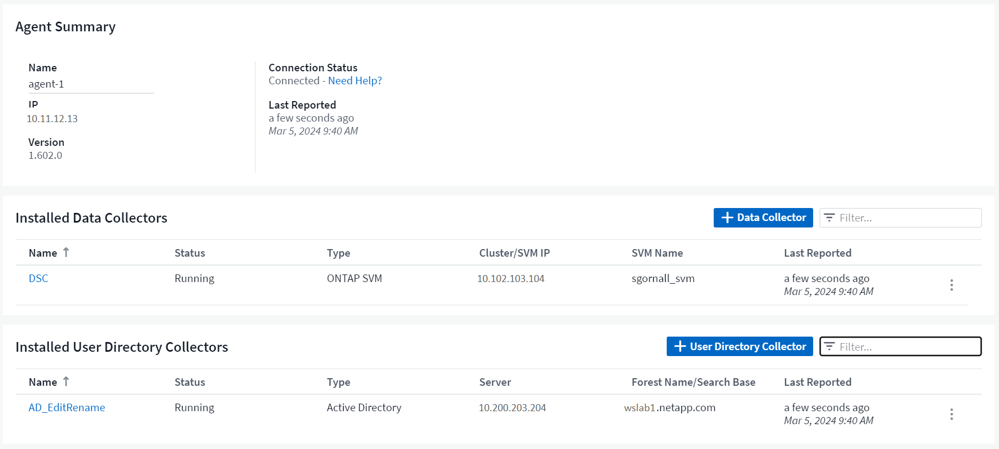
더 많은 데이터를 보다 빠르게 차트로 작성할 수 있습니다
자산의 시작 페이지에서 데이터를 분석할 때 전문가 보기 차트에 데이터를 추가하는 것은 매우 간단합니다. 랜딩 페이지의 각 테이블에 대해 개체 유형에 관련 데이터가 있는 경우 해당 개체 위로 마우스를 가져가면 "전문가 보기에 추가" 아이콘이 표시됩니다. 이 아이콘을 선택하면 해당 개체가 추가 리소스에 추가되고 전문가 보기 차트에 표시됩니다.

또는 랜딩 페이지 표의 데이터를 자체 차트로 표시하려는 경우도 있습니다. 간단히 _Show Chart_icon을 선택하여 표 아래의 차트를 엽니다.

2024년 2월
사용 편의성 개선
오른쪽 드롭다운 메뉴에서 _Export as Image_를 선택하여 현재 대시보드의 * 스냅샷 * 을 저장합니다. Cloud Insights는 현재 위젯 상태의 .PNG를 생성합니다.

-
오브젝트 및 메트릭 선택 * 위젯, 모니터 등의 경우 그 어느 때보다 쉽게 선택할 수 있습니다 원하는 개체 유형을 선택한 다음 별도의 드롭다운에서 해당 개체와 관련된 메트릭을 선택합니다.

-
데이터 수집기 및 수집 장치 내보내기 * 는 해당 페이지 상단의 아이콘을 선택하여 .csv로 목록을 표시합니다.

도움말 > 지원 * 페이지를 재구성했으므로 필요한 항목을 더 쉽게 찾을 수 있습니다. NetApp은 귀하의 요청에 따라 이 페이지에 * API Swagger * 및 사용자 설명서에 직접 링크를 추가했습니다.

-
링크 * 경고 목록 페이지의 "triggeredOn" 열에 있는 링크 * 해당 개체에 랜딩 페이지를 사용할 수 있는 경우 해당 랜딩 페이지로 이동합니다.

네임스페이스의 모든 변경 내용을 확인합니다
이제 Kubernetes 변경 분석을 통해 클러스터 및 네임스페이스를 선택할 때 변경 일정을 확인할 수 있습니다. 이전에는 작업량도 선택해야 했습니다. 클러스터 및 네임스페이스에서 필터링하면 해당 네임스페이스의 모든 워크로드 변경 타임라인이 한 줄에 표시됩니다.

경고에 대한 관련 로그
로그 경고를 볼 때 관련 로그 항목이 새 테이블에 표시됩니다. 로그 항목은 알림과 동일한 소스 및 시간 내에 발생하고 동일한 조건이 적용되는 경우 연결됩니다. 더 자세히 살펴보려면 "Analyze Logs"를 선택하십시오.

ONTAP 스위치 데이터를 수집합니다
워크로드 보안 Data Collector API
대규모 환경에서는 새로운 Data Collector API를 사용하여 워크로드 보안 수집기 생성을 자동화할 수 있습니다. Admin > API Access > API Documentation * 으로 이동한 후 _Workload Security_API 유형을 선택하여 자세히 알아보십시오.
2024년 1월
아직 사용하지 않은 Cloud Insights 기능을 사용해 보십시오
Cloud Insights의 초기 평가판 외에 의 이점을 활용할 수도 있습니다 "모듈 시험". 예를 들어, Cloud Insights를 구독하고 스토리지 및 가상 머신을 모니터링한 경우, Kubernetes를 환경에 추가하면 Kubernetes 관측성 30일 평가판을 자동으로 시작합니다. Kubernetes 관측성 관리형 유닛 사용은 평가 기간이 만료될 때까지 구독한 자격 조건에 포함되지 않습니다.
내 워크로드가 얼마나 정상적인가?
워크로드 상태는 * Kubernetes > Explore > 워크로드 * 페이지에서 한눈에 확인할 수 있으므로 제대로 작동하는 워크로드와 도움이 필요할 수 있는 워크로드를 빠르게 확인할 수 있습니다.

Data Collector 업데이트
Data Domain ID입니다
Data Domain Collector는 페일오버 이벤트 전반에 걸쳐 HA 시스템을 더 잘 식별할 수 있도록 개선되었습니다. 이 변경 사항으로 인해 HA 시스템에서 Data Domain 어플라이언스를 * 한 번 * 재식별할 수 있게 되어 해당 자산의 주석이 제거됩니다(이러한 스토리지가 다시 식별되기 때문에). 주석을 Data Domain 객체에 다시 연결해야 합니다.
향상된 랜섬웨어 감지 ML 알고리즘
워크로드 보안에는 가장 정교한 공격을 더 빠르고 정확하게 감지하는 새로운 2세대 랜섬웨어 감지 ML 알고리즘이 포함되어 있습니다.
행동의 "계절성": 주말 행동은 평일 또는 오후의 아침 행동과 다른 패턴을 따를 수 있습니다. 워크로드 보안 알고리즘은 이러한 계절성을 고려합니다.
2023년 12월
한 눈에 변경 분석
쿠버네티스 "변경 분석" Kubernetes 환경의 최근 변화에 대한 올인원 뷰를 제공합니다. 알림 및 배포 상태를 즉시 확인할 수 있습니다. 변경 분석을 사용하여 모든 배포 및 구성 변경을 추적하고 Kubernetes 서비스, 인프라 및 클러스터의 상태 및 성능과 상호 연관시킬 수 있습니다.

Kubernetes 워크로드 성능 대시보드
포괄적인 Kubernetes 워크로드 성능 대시보드에서 워크로드 성능을 한눈에 파악할 수 있습니다. 볼륨, 처리량, 지연 시간, 재전송 추세에 대한 그래프와 환경의 각 네임스페이스에 대한 워크로드 트래픽 표를 빠르게 확인합니다. 필터를 사용하면 관심 영역에 쉽게 집중할 수 있습니다.


한 화면에서 세부 정보를 쿼리합니다
쿼리에서 행을 선택하면 선택한 행에 대한 속성, 주석 및 메트릭 세부 정보를 보여 주는 측면 패널이 열리고 개체의 랜딩 페이지로 드릴링할 필요 없이 유용한 정보를 제공합니다. 행 또는 측면 패널의 링크를 통해 쉽게 탐색할 수 있습니다.

데이터 수집기 업데이트:
-
* Brocade FOS REST * : 이 수집기는 "미리보기"에서 이동되었으며 현재 일반적으로 사용할 수 있습니다. 참고 사항:
-
FOS는 FOS 8.2에서 REST API를 도입했습니다. 하지만 라우팅과 같은 일부 기능은 9.0의 REST API 기능만 제공되었습니다.
-
일부 <8.2>와 혼합 FOS 자산으로 구성된 패브릭이 있는 경우 Cloud Insights FOS REST Collector는 이러한 이전 자산을 검색하지 못합니다. FOS REST Collector를 편집하고 해당 Collector에서 제외할 장치의 IPv4 주소 목록을 쉼표로 구분하여 작성할 수 있습니다.
-
-
* SELinux *: Cloud Insights는 SELinux 시행이 활성화된 Linux 환경 내에서 운영의 안정성을 보장하기 위해 Linux 수집 장치의 초기 설치에 대한 개선 사항을 포함합니다. 이러한 개선 사항은 IMPACT_NEW_AU 배포에만 적용됩니다. AU 업그레이드와 관련된 SELinux 문제가 있는 경우 NetApp 지원 팀에 문의하여 SELinux 구성을 수정하십시오.
2023년 11월
워크로드 보안: Collector를 일시 중지/다시 시작합니다
워크로드 보안에서 수집기가 _running_state에 있으면 데이터 수집기를 일시 중지할 수 있습니다. 수집기에 대한 "세 개의 점" 메뉴를 열고 일시 중지를 선택합니다. Collector가 일시 중지되는 동안 ONTAP에서 수집된 데이터는 없고 Collector에서 ONTAP로 전송되는 데이터는 없습니다. 다시 수집을 시작하려면 다시 시작을 선택하십시오.
스토리지 노드 지원 정보입니다
스토리지 노드 랜딩 페이지에서 User Data 섹션은 지원 제공 서비스, 현재 상태, 지원 상태 및 보증 종료 날짜에 대한 정보를 한 눈에 제공합니다. 현재 Cloud Insights는 NetApp 장치에 대해서만 이 정보를 자동 게시합니다. 또한 이러한 지원 필드는 주석이므로 쿼리 및 대시보드에서 사용할 수 있습니다.

VMware 태그를 Cloud Insights 주석에 매핑합니다
를 클릭합니다 "VMware" Data Collector를 사용하면 VMware에 구성된 동일한 이름의 태그로 Cloud Insights 텍스트 주석을 채울 수 있습니다.
FOS 9.1.1c 이상 펌웨어에 대한 Brocade CLI Collector 안정성 향상
9.1.1c 펌웨어를 실행하는 일부 Brocade 파이버 채널 스위치에서 특정 CLI 명령의 출력 앞에 "mott" 로그인 배너 텍스트 또는 기본 암호 변경에 대한 사용자 경고가 표시될 수 있습니다. Brocade CLI Collector는 이러한 두 가지 유형의 불필요한 텍스트를 무시하도록 개선되었습니다.
이 개선 사항 이전에는 가상 패브릭이 없는 FOS 9.1.1c 스위치만 이 컬렉터 유형으로 검색할 수 있었습니다.
2023년 10월
향상된 워크로드 보안
워크로드 보안은 다음과 같이 개선되었습니다.
-
* 액세스 거부 *: 워크로드 보안은 ONTAP와 통합되어 수신됩니다 ""액세스 거부됨" 이벤트입니다" 추가 분석 및 자동 응답 계층을 제공합니다.
-
* 허용 파일 유형 * : 알려진 파일 확장자에 대한 랜섬웨어 공격이 감지되면 해당 파일 확장자를 에 추가할 수 있습니다 "허용되는 파일 형식" 불필요한 경고를 방지하기 위한 목록
모듈 시험
Cloud Insights의 초기 평가판 외에 의 이점을 활용할 수도 있습니다 "모듈 시험". 예를 들어, 이미 Infrastructure 관측성 에 가입하고 Kubernetes를 환경에 추가하고 있는 경우 Kubernetes 관측성 30일 시험판에 자동으로 등록됩니다. 평가판 기간이 끝날 때까지만 Kubernetes 관측성 관리형 유닛 사용에 대한 요금을 청구합니다.
지정된 도메인에 대한 액세스를 제한합니다
관리자 및 계정 소유자는 이제 이 기능을 사용할 수 있습니다 "Cloud Insights 액세스를 제한합니다" 전자 메일 도메인으로 지정합니다. 관리자 > 사용자 관리 * 로 이동하고 도메인 제한 버튼을 선택합니다.
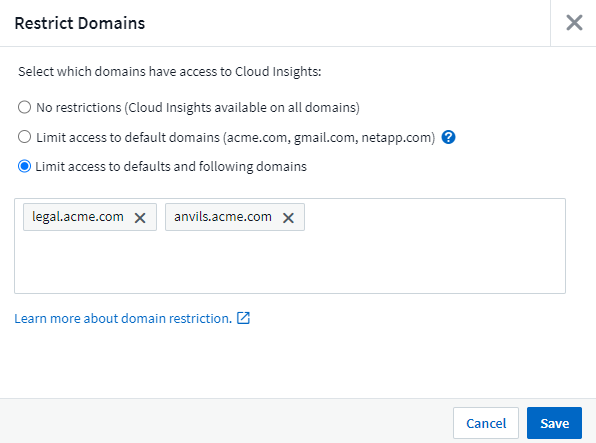
Data Collector 업데이트
다음 데이터 수집기/획득 장치 변경 사항이 있습니다.
-
* Isilon/PowerScale REST *: emc_isilon.node_pool.* 이름으로 Cloud Insights의 향상된 분석 기능에 다양한 새로운 특성 및 메트릭이 추가되었습니다. 이러한 카운터와 속성을 통해 사용자는 대시보드를 구축하고 _node_pool_capacity 소비를 모니터링할 수 있습니다. 서로 다른 하드웨어 노드 모델로 구축된 Isilon 클러스터를 사용하는 사용자는 여러 노드 풀을 갖게 되며, 노드 풀 레벨에서 HDD/SSD/총 용량 소비를 이해하는 것은 모니터링과 계획에 모두 유용합니다.
-
* Rubrik * "서비스 계정" 인증 지원: Cloud Insights의 Rubrik Collector는 이제 기존의 HTTP 기본 인증(사용자 이름 및 암호)과 사용자 이름 + 비밀 + 조직 ID가 필요한 Rubrik의 서비스 계정 접근 방식을 모두 지원합니다.
2023년 9월
로그에서 원하는 항목을 쉽게 찾을 수 있습니다
로그 쿼리(* 관측성 > 로그 쿼리 > + 새 로그 쿼리 *)에는 많은 수가 포함됩니다 "개선 사항" 로그 탐색이 더 쉽고 더 많은 정보를 제공합니다.
포함/제외
값을 필터링할 때 필터와 일치하는 * 포함 * 또는 * 제외 * 결과를 선택할 수 있습니다. "제외"를 선택하면 "Not <value>" 필터가 생성됩니다. 단일 필터에서 포함 및 제외 값을 결합할 수 있습니다.

고급 쿼리
-
고급 쿼리 * 는 AND, NOT, OR, 와일드카드 등을 사용하여 값을 결합 또는 제외하고 "자유 형식" 필터를 만들 수 있는 기회를 제공합니다

"필터 기준"과 "고급 쿼리"는 "및"로 함께 표시되어 단일 쿼리를 형성합니다. 결과 목록과 차트에 결과가 표시됩니다.
차트의 그룹화
Group By * 에 대한 로그 속성을 선택하면 목록과 차트에 현재 필터의 결과가 표시됩니다. 차트에서 열이 색으로 그룹화되어 있습니다. 차트의 열 위로 마우스를 이동하면 차트 범례를 확장할 때 표시되는 전체 정보와 유사하게 특정 항목에 대한 세부 정보가 표시됩니다. 범례에서는 특정 그룹화에 대해 포함 또는 제외 필터를 설정하도록 선택할 수도 있습니다.

"유동" 로그 세부 정보 패널
로그 쿼리를 사용하여 로그를 탐색할 때 목록에서 항목을 선택하면 해당 항목에 대한 세부 정보 패널이 열립니다. 이제 슬라이드 아웃 패널 "Floating(부동)"(즉, 화면의 나머지 부분에 표시됨) 또는 "In Page(페이지 내)"(즉, 페이지 내 자체 프레임으로 표시됨)를 표시하도록 선택할 수 있습니다. 이러한 보기 사이를 전환하려면 패널의 오른쪽 상단 모서리에 있는 "페이지/부동" 버튼을 선택합니다.

메뉴를 축소합니다
메뉴 아래에 있는 "최소화" 버튼을 선택하여 왼쪽 Cloud Insights 탐색 메뉴를 축소할 수 있습니다. 메뉴가 최소화된 상태에서 아이콘 위에 마우스를 올려 놓으면 열리는 섹션이 표시됩니다. 아이콘을 선택하면 메뉴가 열리고 해당 섹션으로 바로 이동합니다.

데이터 수집기 개선
Cloud Insights를 사용하면 데이터 수집기 정보를 보다 쉽게 표시하고 찾을 수 있습니다.
-
* 데이터 수집기 목록 * 처리는 더 효율적입니다. 즉, 이 목록을 표시하고 탐색하는 데 걸리는 시간이 크게 단축됩니다. 많은 데이터 수집기가 있는 대규모 환경의 경우 데이터 수집기를 나열할 때 성능이 크게 향상됩니다.
-
데이터 수집기 지원 매트릭스 * 는 .pdf 파일에서 .html 기반 페이지로 이동하므로 탐색이 더 빠르고 유지 관리가 용이합니다. 새로운 매트릭스는 다음 웹 사이트에서 확인하십시오. https://docs.netapp.com/us-en/cloudinsights/reference_data_collector_support_matrix.html
2023년 8월
Isilon/PowerScale 로그 및 고급 분석 데이터 수집
Isilon REST 및 PowerScale REST Collector에는 다음과 같은 향상된 기능이 포함되어 있습니다.
-
Isilon 로그 이벤트는 쿼리 및 알림에 사용할 수 있습니다
-
Isilon Advanced Analytic 속성은 쿼리, 대시보드 및 알림에 사용할 수 있습니다.
-
EMC_Isilon.cluster입니다
-
emc_isilon.node
-
emc_isilon.node_disk
-
emc_isilon.net_iface
-
이러한 기능은 Isilon REST 및/또는 PowerScale REST Collector 사용자에게 기본적으로 설정됩니다. NetApp는 Isilon CLI 기반 Collector를 사용하는 사용자가 위와 같은 개선 사항을 받으려면 새로운 REST API 기반 Collector로 마이그레이션할 것을 적극 권장합니다.
개선된 워크로드 맵
워크로드 맵은 보다 유용하고 노이즈가 적으며, 동일한 워크로드와 통신하는 경우 유사한 모든 외부 서비스를 하나의 노드로 그룹화하여 그래프의 복잡성을 줄이고 서비스 상호 연결 방식을 더 쉽게 이해할 수 있도록 합니다.
그룹화된 노드를 선택하면 해당 노드와 관련된 각 외부 서비스에 대한 네트워크 트래픽 메트릭이 포함된 상세 테이블이 표시됩니다.
Kubernetes 관리 유닛 사용 조정
NetApp Kubernetes 모니터링 담당자와 기본 인프라 데이터 수집기(예: VMware)가 Kubernetes 클러스터 환경에서 컴퓨팅 리소스를 계산하는 경우 관리되는 장치의 수를 가장 효율적으로 카운트할 수 있도록 이러한 리소스 사용이 조정됩니다. Kubernetes MU 조정 사항은 요약 및 사용 탭 모두에서 관리자 > 구독 페이지에서 확인할 수 있습니다.
요약 탭:

사용 탭:

수집기/획득 변경:
다음 데이터 수집기/획득 장치 변경 사항이 있습니다.
-
이제 Acquisition Unit은 RHEL 8.7을 지원합니다.
개선된 메뉴
고객의 워크플로우를 더욱 효과적으로 지원할 수 있도록 좌측 탐색 메뉴를 업데이트했습니다. _Kubernetes_와 같은 새로운 최상위 항목은 고객의 요구 사항에 대한 액세스를 가속화하며, 통합된 관리자 콘솔은 테넌트 소유자 역할을 지원합니다.
다음은 몇 가지 변경 사항의 추가 예입니다.
-
최상위 _관측성_메뉴는 데이터 검색, 경고 및 로그 쿼리를 보여줍니다
-
관측성 및 워크로드 보안을 위한 'API 액세스' 기능은 단일 메뉴 아래에 있습니다
-
마찬가지로, 관측성 및 워크로드 보안 '알림' 기능도 한 가지 메뉴로 제공됩니다

다음은 각 메뉴에서 찾을 수 있는 기능의 간단한 목록입니다.
관측성:
-
탐색(대시보드, 메트릭 쿼리, 인프라 인사이트)
-
경고(모니터 및 경고)
-
수집기(데이터 수집기 및 획득 장치)
-
로그 쿼리
-
보강(주석 및 주석 규칙, 응용 프로그램, 장치 해상도)
-
보고
쿠버네티스:
-
클러스터 탐색 및 네트워크 맵
워크로드 보안:
-
경고
-
법의학
-
수집기
-
정책
ONTAP 요약:
-
데이터 보호
-
보안
-
경고
-
검토할 수 있습니다
-
네트워킹
-
워크로드
-
VMware
관리자:
-
API 액세스
-
감사
-
알림
-
구독 정보
-
사용자 관리
2023년 7월
최근 변경 내용 표시
이제 Data Collector 시작 페이지에 최근 변경 사항 목록이 포함됩니다. 데이터 수집기 랜딩 페이지 맨 아래에 있는 "최근 변경 사항" 버튼을 클릭하면 최근 데이터 수집기 변경 사항이 표시됩니다.

운전자 개선
에서는 다음과 같은 개선 사항이 이루어졌습니다 "Kubernetes 운영자" 배포:
-
Docker 메트릭 수집을 무시하는 옵션입니다
-
Telegraf Demonsets 및 Replicasets에 대한 허용 기준을 추가하고 사용자 지정할 수 있습니다
Insight: 콜드 스토리지 부가세 반환 청구액
를 클릭합니다 "ONTAP 콜드 스토리지 파악 비용 재확보" 이제 FlexGroups를 지원하며 모든 고객이 사용할 수 있습니다.
작업자 이미지 서명
NetApp Kubernetes 모니터링 운영자용 개인 저장소를 사용하는 고객의 경우, 이제 오퍼레이터 설치 중에 이미지 서명 공개 키를 복사하여 다운로드한 소프트웨어의 정품 여부를 확인할 수 있습니다. 사용자 이미지를 개인 리포지토리에 업로드 _ 하는 선택적 단계 동안 _ 이미지 서명 공개 키 복사 _ 버튼을 선택합니다.

쿼리의 집계, 조건부 서식 및 기타
집계, 단위 선택, 조건부 서식 및 열 이름 바꾸기는 대시보드 테이블 위젯의 가장 유용한 기능 중 하나이며, 이제 이러한 기능을 에서 사용할 수 있습니다 "쿼리".

이러한 기능은 현재 통합 유형 데이터(Kubernetes, ONTAP 고급 메트릭 등)에 사용할 수 있으며, 인프라 오브젝트(스토리지, 볼륨, 스위치 등)에 대해 곧 제공될 예정입니다.
감사를 위한 API
이제 API를 사용하여 감사된 이벤트를 쿼리하거나 내보낼 수 있습니다. 관리자 > API 액세스로 이동하여 자세한 내용을 보려면 _API Documentation_link를 선택하십시오.

데이터 수집기: Trident 이코노미
Cloud Insights는 이제 Trident 이코노미 드라이버를 지원하므로 다음과 같은 이점을 누릴 수 있습니다.
-
Pod-ONTAP Qtree 매핑 및 성능 메트릭에 대한 가시성을 제공합니다.
-
Kubernetes Pod에서 백엔드 스토리지로 원활하게 문제를 해결하고 쉽게 탐색할 수 있습니다
-
모니터의 백엔드 성능 문제를 사전 예방적으로 감지합니다
2023년 6월
사용 현황을 확인합니다
2023년 6월부터 Cloud Insights는 기능 세트를 기준으로 관리되는 장치 사용에 대한 분석을 제공합니다. 이제 인프라의 관리 장치(MU) 사용량과 Kubernetes와 연결된 MU 사용량을 빠르게 확인하고 모니터링할 수 있습니다.

Kubernetes Network Monitoring and Map은 모든 경우에 사용할 수 있습니다
를 클릭합니다 "_Kubernetes 네트워크 성능 및 맵 _" Kubernetes 워크로드 간의 종속성을 매핑하여 문제 해결을 단순화함으로써 Kubernetes 네트워크 성능 지연 시간 및 이상 징후를 실시간으로 파악하여 사용자에게 영향을 미치기 전에 성능 문제를 식별합니다. 많은 고객이 미리 보기 중에 유용하다고 확인했으며, 이제 모두가 즐길 수 있습니다.
수집기/획득 변경:
다음 데이터 수집기/획득 장치 변경 사항이 있습니다.
-
Data Domain 및 Cohesity MU는 40TiB:1MU로 측정됩니다.
-
이제 인수 장치는 RHEL 및 Rocky 9.0 및 9.1을 지원합니다.
새로운 ONTAP Essentials 대시보드
다음 ONTAP Essentials 대시보드는 미리 보기 환경에서 사용할 수 있으며 이제 모든 사용자가 사용할 수 있습니다.
-
보안 대시보드
-
데이터 보호 대시보드(로컬 및 원격 보호 개요 포함)
추가 시스템 모니터
Cloud Insights에는 다음과 같은 시스템 모니터가 포함되어 있습니다.
-
스토리지 VM FCP 서비스를 사용할 수 없습니다
-
스토리지 VM iSCSI 서비스를 사용할 수 없습니다
2023년 5월
Kubernetes 모니터링 오퍼레이터 설치가 개선되었습니다
의 설치 및 구성 "NetApp Kubernetes 모니터링 운영자" 다음과 같은 향상된 기능으로 그 어느 때보다 쉬워졌습니다.
-
방법입니다 "구성 설정" 자체 문서화된 단일 구성 파일로 저장됩니다.
-
Kubernetes Monitoring Operator 이미지를 개인 저장소에 업로드하기 위한 단계별 지침입니다.
-
사용자 지정 구성을 유지하면서 Kubernetes Monitoring을 업그레이드하는 단일 명령으로 간단하게 업그레이드할 수 있습니다.
-
보안 향상: API 키가 비밀을 안전하게 관리하고 있습니다.
-
CI/CD 자동화 툴을 손쉽게 통합 및 구축할 수 있습니다.
스토리지 가상화
Cloud Insights는 로컬 스토리지가 있는 스토리지 어레이와 다른 스토리지 어레이의 가상화를 구분할 수 있습니다. 이를 통해 비용을 관련시키고 프런트 엔드와 성능을 인프라 백 엔드와 구별할 수 있습니다.

새 Webhook 매개 변수
을 생성할 때 "웹훅" 이제 Webhook 정의에 다음 매개 변수를 포함할 수 있습니다.
-
%%TriggeredOnKeys%%
-
%%TriggeredOnValues%%입니다
Kubernetes 데이터에 대한 리포팅
PV(영구적 볼륨), PVC, 워크로드, 클러스터, 네임스페이스를 비롯한 Cloud Insights에서 수집된 Kubernetes 데이터를 이제 보고, 차지백, 추세, 예측, TTF 계산, 기타 Kubernetes 메트릭의 비즈니스 보고 기능을 제공합니다.
새 고객에 대해 활성화된 기본 ONTAP 시스템 모니터
새로운 Cloud Insights 환경에서는 많은 ONTAP 시스템 모니터가 기본적으로 활성화(즉, 재개)됩니다. 이전 버전에서는 대부분의 모니터가 _ 일시 중지됨 _ 상태로 기본 설정되어 있습니다. 회사마다 비즈니스 요구 사항이 다르기 때문에 항상 을 살펴보는 것이 좋습니다 "시스템 모니터" 사용자 환경에서 경고 요구에 따라 각 항목을 일시 중지하거나 다시 시작합니다.
2023년 4월
Kubernetes 성능 모니터링 및 맵
를 클릭합니다 "_Kubernetes 네트워크 성능 및 맵 _" Kubernetes 워크로드 간의 종속성을 매핑하여 문제 해결을 간소화합니다. Kubernetes 네트워크 성능 지연 시간 및 이상 징후를 실시간으로 파악하여 사용자에게 영향을 미치기 전에 성능 문제를 식별할 수 있습니다. 이 기능은 조직이 Kubernetes 트래픽 흐름을 분석하고 감사하여 전체 비용을 절감할 수 있도록 도와줍니다.
주요 기능: • 워크로드 맵은 Kubernetes 워크로드 종속성 및 흐름을 제공하고 네트워크 및 성능 문제를 강조합니다. • Kubernetes Pod, 워크로드 및 노드 간의 네트워크 트래픽을 모니터링하고, 트래픽 및 지연 문제의 원인을 식별합니다. • 수신, 송신, 지역 간 및 교차 영역 네트워크 트래픽을 분석하여 전체 비용을 절감합니다.
"Slideout" 세부 정보를 보여주는 워크로드 맵:

Kubernetes 성능 모니터링 및 맵은 으로 제공됩니다 "미리보기" 피처.
ONTAP Essentials 보안 대시보드
를 클릭합니다 "보안 대시보드" 하드웨어 및 소프트웨어 볼륨 암호화, 랜섬웨어 방지 상태 및 클러스터 인증 방법에 대한 차트를 보여 주는 현재의 보안 상황을 즉시 확인할 수 있습니다. 보안 대시보드는 로 사용할 수 있습니다 "미리보기" 피처.

ONTAP 콜드 스토리지 재확보
Reclaim ONTAP 냉장 보관_Insight는 ONTAP 시스템의 볼륨에 대한 콜드 용량, 잠재적 비용/전력 절감 및 권장 조치 항목에 대한 데이터를 제공합니다.

Insight에서 다음과 같은 질문에 답변할 수 있습니다.
-
스토리지 클러스터의 콜드 데이터는 (a) 고비용의 SSD 디스크, (b) HDD 디스크, (c) 가상 디스크에 있습니까?
-
최적화되지 않은 스토리지와 관련하여 가장 큰 기여 요인은 무엇입니까?
-
특정 워크로드에서 데이터가 콜드 상태가 된 기간(일)은 얼마입니까?
_Reclaim ONTAP 냉장 보관 _ 은(는) 로 간주됩니다 "_미리보기 _" 변경될 수 있습니다.
구독 알림은 배너 메시지도 제어합니다
구독 알림을 받는 사람 설정(관리자 > 알림) 또한 구독 관련 제품 내 배너 알림을 볼 사용자를 제어합니다.

보고 기능이 새롭게 추가되었습니다
Cloud Insights 보고 화면의 모양이 새롭게 바뀌었고 일부 메뉴 탐색이 변경되었음을 알 수 있습니다. 이러한 화면 및 탐색 변경 사항은 현재 에서 업데이트되었습니다 "보고 문서".

모니터가 기본적으로 일시 중지되었습니다
새로운 Cloud Insights 환경에서는 이 점에 유의하십시오 "시스템 정의 모니터" 기본적으로 경고 알림을 보내지 않습니다. 모니터에 대해 하나 이상의 전달 방법을 추가하여 알림을 받을 모니터에 대한 알림을 활성화해야 합니다. 기존 Cloud Insights 환경의 경우 현재 _ 일시 중지됨 _ 상태에 있는 시스템 정의 모니터에 대해 default_global_notification 수신자 목록이 제거되었습니다. 사용자 정의 알림은 현재 활성화된 시스템 정의 모니터에 대한 알림 설정과 마찬가지로 변경되지 않습니다.
API 미터링 탭을 찾고 계십니까?
API 미터링 기능이 가입 페이지에서 * 관리자 > API 액세스 * 페이지로 이동했습니다.
2023년 3월
ONTAP 9.9+용 클라우드 연결은 더 이상 사용되지 않습니다
ONTAP 9.9 이상의 데이터 수집기에 대한 클라우드 연결이 더 이상 사용되지 않습니다. 2023년 4월 4일부터 사용자 환경의 Cloud Connection 데이터 수집기는 더 이상 데이터를 수집하지 않으며 폴링 시 오류를 표시합니다. 클라우드 연결 데이터 수집기는 후속 업데이트에서 Cloud Insights에서 완전히 제거됩니다.
2023년 4월 4일 이전에는 클라우드 연결에서 현재 수집한 ONTAP 시스템의 새로운 NetApp ONTAP 데이터 관리 소프트웨어 데이터 수집기를 구성해야 합니다. "자세한 정보".
2023년 1월
새 로그 모니터
거의 20개를 추가했습니다 "추가 시스템 모니터" 끊어진 상호 연결 링크, 하트비트 문제 등에 대해 경고합니다. 또한 SnapMirror 자동 재동기화, MetroCluster 미러링 및 FabricPool 미러 재동기화 변경 사항을 알리기 위해 세 개의 새로운 데이터 보호 로그 모니터가 추가되었습니다.
이러한 모니터 중 일부는 기본적으로 _ENABLED_로 설정됩니다. 이러한 모니터에 대해 경고를 표시하지 않으려면 _PAUSE_로 설정해야 합니다. 또한 이러한 모니터는 알림을 전달하도록 구성되지 않았습니다. e-메일 또는 웹 후크를 통해 알림을 보내려면 이러한 모니터에서 알림 수신자를 구성해야 합니다.
모든 대시보드 테이블 위젯에 대한 .csv 내보내기
데이터 액세스를 보장하는 것이 필수이므로 .csv 내보내기를 만들었습니다 쿼리 중인 데이터 유형(자산 또는 통합)에 관계없이 모든 메트릭 쿼리, 대시보드 테이블 위젯 및 개체 랜딩 페이지에 사용할 수 있습니다.
이제 열 선택, 열 이름 바꾸기, 단위 변환과 같은 데이터 사용자 지정 기능도 새로운 내보내기 기능에 포함됩니다.
2022년 12월
Cloud Insights 평가판 을 통해 랜섬웨어 차단 및 기타 보안 기능을 탐색하십시오
오늘부터 새로운 Cloud Insights 평가판을 신청하면 랜섬웨어 탐지 및 자동화된 사용자 차단 응답 정책과 같은 보안 기능을 탐색할 수 있습니다. 평가판을 신청하지 않았다면 지금 바로 등록하세요!
Kubernetes 워크로드에는 고유한 랜딩 페이지가 있습니다
워크로드는 Kubernetes 환경의 핵심 부분이므로 Cloud Insights은 현재 이러한 워크로드에 대한 랜딩 페이지를 제공합니다. Kubernetes 워크로드에 영향을 미치는 문제를 여기 에서 확인, 탐색 및 해결할 수 있습니다.

체크섬을 확인하십시오
Windows 및 Linux용 에이전트를 설치하는 동안 체크섬 값을 제공하도록 요청했으며 이는 좋은 생각이라고 생각합니다. 주요 내용은 다음과 같습니다.

로그 경고가 개선되었습니다
그룹화 기준
로그 모니터를 만들거나 편집할 때 이제 "그룹화 기준" 속성을 설정하여 보다 집중적인 경고를 허용할 수 있습니다. 모니터 정의의 "필터" 설정 아래에서 "그룹화 기준" 속성을 찾습니다.
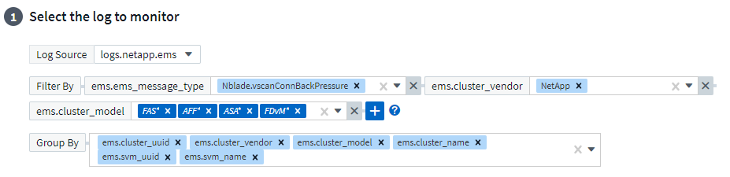
이렇게 변경하면 모니터 정의의 "그룹화 기준" 측면을 정규화하여 메트릭 모니터와 로그 모니터를 기능 패리티로 가져옵니다. 이 패리티를 통해 고객은 추가 사용자 지정을 위해 모든 * 시스템 정의 기본 모니터를 복제/복제할 수 있습니다.
복제 중
이제 변경 로그, Kubernetes 로그 및 Data Collector 로그 모니터를 복제(복제)할 수 있습니다. 이렇게 하면 특정 정의에 맞게 수정할 수 있는 새 사용자 지정 로그 모니터가 생성됩니다.

비즈니스 연속성을 위한 SnapMirror를 포함하는 새로운 기본 ONTAP 모니터 11개
거의 12개의 새로운 기능이 추가되었습니다 "시스템 모니터" SMBC(비즈니스 연속성을 위한 SnapMirror): SMBC 인증서 및 ONTAP 중개자의 변경 사항을 경고합니다.
2022년 11월
40개 이상의 새로운 보안, 데이터 수집 및 CVO 모니터!
NetApp은 수십 개의 새로운 시스템 정의 모니터를 추가하여 Cloud Volumes, Security 및 Data Protection의 잠재적 문제를 경고합니다. 이 모니터에 대해 자세히 알아보십시오 "여기".
2022년 10월
ONTAP Autonomous 랜섬웨어 보호 통합을 통해 더 정확하고 우수한 랜섬웨어 탐지 기능을 제공합니다
Cloud Secure은 ONTAP과의 통합을 통해 랜섬웨어 탐지 기능을 개선합니다 "자율 랜섬웨어 보호" (ARP)
Cloud Secure는 잠재적인 볼륨 파일 암호화 작업에 대한 ONTAP ARP 이벤트를 수신합니다
-
볼륨 암호화 이벤트와 사용자 활동의 상관 관계를 분석하여 손상을 일으키는 원인을 파악하고,
-
자동 응답 정책을 구현하여 공격을 차단합니다.
-
영향을 받은 파일을 식별하여 신속하게 복구하고 데이터 침해 조사를 수행할 수 있습니다.
2022년 9월
기본 버전에서 사용할 수 있는 모니터입니다
ONTAP "기본 모니터" 이제 Cloud Insights Basic Edition에서 사용할 수 있습니다. 여기에는 70개 이상의 인프라 모니터와 30개의 워크로드 예가 포함됩니다.
ONTAP Power 및 StorageGRID 대시보드
대시보드 갤러리에는 ONTAP 전원 및 온도에 대한 새로운 대시보드와 StorageGRID에 대한 4개의 대시보드가 포함되어 있습니다. 사용자 환경에서 ONTAP 전력 메트릭 및/또는 StorageGRID 데이터를 수집하는 경우 Gallery * 에서 * + 를 선택하여 이러한 대시보드를 가져옵니다.
표에서 임계값 표시 상태를 한 눈에 파악할 수 있습니다
조건부 서식을 사용하면 테이블 위젯에서 경고 수준 및 위험 수준 임계값을 설정하고 강조 표시하여 이상값 및 예외적인 데이터 지점에 대한 즉각적인 가시성을 얻을 수 있습니다.

보안 모니터
Cloud Insights는 ONTAP 시스템에서 FIPS 모드가 비활성화되었음을 감지하면 알림을 표시합니다. 에 대해 자세히 알아보십시오 "시스템 모니터"이 공간을 통해 곧 출시될 보안 모니터를 더 많이 확보할 수 있습니다!
어디서나 채팅할 수 있습니다
새로운 * 도움말 > 라이브 채팅 * 링크를 선택하여 Cloud Insights 화면에서 NetApp 지원 전문가와 채팅할 수 있습니다. 도움말은 "?"에서 확인할 수 있습니다. 아이콘을 클릭합니다.

보다 가시적인 통찰력
환경에서 가 발생하는 경우 "통찰력" Stress_or_Kubernetes Namespaces running of Space _ 아래의 공유 리소스 등, 이제 영향을 받는 리소스의 자산 랜딩 페이지에는 Insight 자체에 대한 링크가 포함되어 보다 신속한 탐색 및 문제 해결을 제공합니다.
새 데이터 수집기
-
Amazon S3(Preview에서 사용 가능)
-
Brocade FOS 9.0.x
-
Dell/EMC PowerStore 3.0.0.0입니다
기타 Data Collector 업데이트
이제 모든 데이터 소스가 획득 장치 업데이트 및/또는 패치 후 성능 폴링을 재개하도록 최적화되었습니다.
2022년 8월
Cloud Insights의 새로운 디자인!
이번 달부터 "모니터링 및 최적화"는 * 관찰 가능성 * 으로 이름이 바뀌었습니다. 여기에서 대시보드, 쿼리, 알림 및 보고와 같은 자주 사용하는 기능을 모두 찾을 수 있습니다. 또한 새로운 * 보안 * 메뉴에서 Cloud Secure를 찾으십시오. 메뉴만 변경되었으며 기능은 동일하게 유지됩니다.
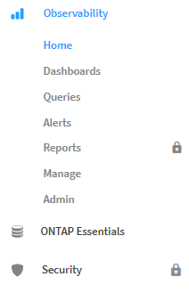
도움말 * 메뉴를 찾으십니까?
이제 화면 오른쪽 상단에 도움을 받을 수 있습니다.

어디서부터 시작해야 할지 잘 모르십니까? ONTAP 필수품을 확인해 보세요!
"* ONTAP 필수 요소 *" 는 스토리지 용량 및 성능에 대한 완벽한 예측을 비롯하여 NetApp ONTAP 인벤토리, 워크로드 및 데이터 보호에 대한 자세한 보기를 제공하는 대시보드 및 워크플로우 세트입니다. 높은 활용률로 실행 중인 컨트롤러가 있는지 확인할 수도 있습니다. ONTAP 필수 요소 는 NetApp ONTAP의 모든 모니터링 요구를 충족하는 데 이상적인 장소입니다!
모든 버전에서 제공되는 ONTAP Essentials는 기존 ONTAP 운영자 및 관리자에게 직관적 기능을 제공하도록 설계되어 ActiveIQ Unified Manager에서 서비스 기반 관리 툴로 간편하게 전환할 수 있습니다.
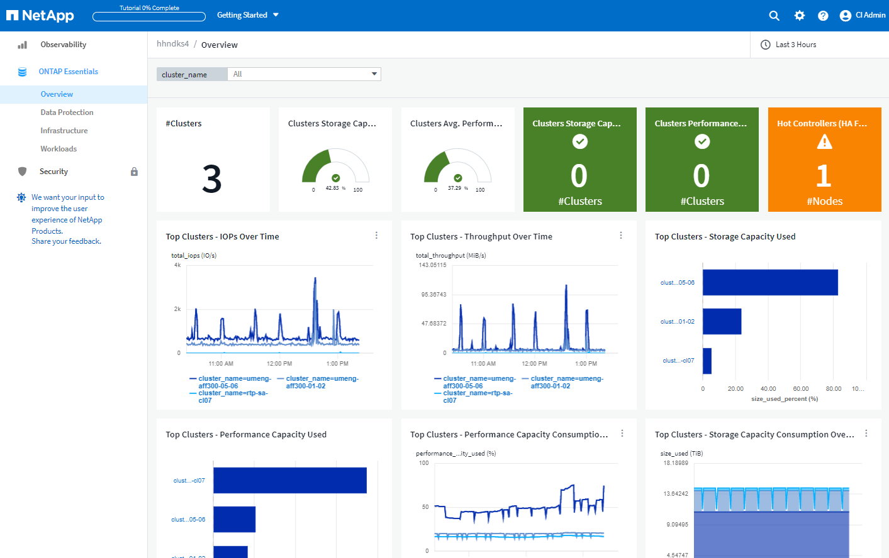
스토리지 데이터 제품군이 병합됩니다
여러분이 요청하셨는데, 이제 모든 것이 가능합니다. 이제 스토리지 기본 2 및 기본 10 데이터 유닛이 비트 및 바이트에서 테비비트 및 테라바이트에 이르는 하나의 제품군으로 결합되어 대시보드에 데이터를 쉽게 표시할 수 있습니다. 데이터 전송 속도는 또한 자체 빅 제품군이기도 합니다.

내 스토리지에서 사용하는 전력은 얼마나 됩니까?
NetApp_ONTAP.storage_shelf, NetApp_ONTAP.system_node, NetApp_ONTAP.cluster(전력 소비만 해당) 메트릭을 사용하여 ONTAP 스토리지 쉘프 및 노드 전력 소비량, 온도 및 팬 속도를 표시하고 모니터링합니다.

미리보기에서 점진 피처
다음 기능은 미리 보기에서 제외되었으며 현재 모든 고객이 사용할 수 있습니다.
* 피처 * |
* 설명 * |
공간이 부족되는 Kubernetes 네임스페이스 |
Space_Insight에서 실행되는 _Kubernetes 네임스페이스 를 사용하면 공간이 부족할 위험이 있는 Kubernetes 네임스페이스의 워크로드를 볼 수 있으며 각 공간이 가득 채워지기 전의 남은 일 수에 대한 추정치가 있습니다."자세히 보기" |
스트레스 상태의 공유 리소스 |
Stress_insight 아래의 _ 공유 리소스는 AI/ML을 사용하여 리소스 경합이 사용자 환경에서 성능 저하를 일으키는 위치를 자동으로 식별하고, 해당 환경의 영향을 받는 워크로드를 강조 표시하고, 문제 해결을 위한 권장 조치를 제공하여 성능 문제를 보다 빠르게 해결합니다."자세히 보기" |
Cloud Secure – 공격에 대한 사용자 액세스를 차단합니다 |
공격이 감지될 때 사용자 액세스를 차단하는 기능을 통해 업무상 중요한 데이터를 더욱 안전하게 보호할 수 있습니다. 자동 응답 정책을 사용하거나 알림 또는 사용자 세부 정보 페이지에서 수동으로 액세스를 차단할 수 있습니다."자세히 보기" |
데이터 수집 상태는 어떻습니까?
Cloud Insights는 획득 장치에 대해 2개의 새로운 하트비트 모니터와 데이터 수집기 오류를 경고하는 2개의 모니터를 제공합니다. 이러한 정보는 데이터 수집 문제를 신속하게 경고하는 데 사용할 수 있습니다.
이제 _ Data Collection_monitor 그룹에서 다음 모니터를 사용할 수 있습니다.
-
획득 장치 하트비트 - 중요
-
획득 장치 하트비트 - 경고
-
Collector 실패
-
수집기 경고
이러한 모니터는 기본적으로 _ 일시 중지됨 _ 상태입니다. 데이터 수집 문제에 대한 알림을 받으려면 이 기능을 활성화하십시오.
자동 갱신 API 토큰
이제 API 액세스 토큰을 자동 갱신으로 설정할 수 있습니다. 이 기능을 활성화하면 만료된 토큰에 대해 새/업데이트된 API 액세스 토큰이 자동으로 생성됩니다. 만료 예정인 토큰을 사용하는 Cloud Insights 에이전트는 해당 신규/업데이트된 API 액세스 토큰을 사용하도록 자동으로 업데이트되므로 계속해서 원활하게 작동할 수 있습니다. 토큰을 만들 때 "토큰 자동 갱신" 상자를 선택하기만 하면 됩니다. 이 기능은 현재 Kubernetes 플랫폼에서 최신 NetApp Kubernetes 모니터링 운영자가 있는 Cloud Insights 에이전트에서 지원됩니다.
Basic Edition은 이전보다 더 많은 기능을 제공합니다
평가판 사용 기간이 종료되었지만 구독이 귀하에게 적합한지 아직 확신할 수 없습니다. Basic Edition에서는 항상 현재 ONTAP 데이터 수집기에서 Cloud Insights를 계속 사용할 수 있지만, 이제 VMware 버전, 토폴로지 및 IOPS/처리량/지연 시간 데이터를 계속 캡처할 수 있습니다. 스토리지 시스템에 대한 프리미엄 지원을 받는 NetApp 고객은 Cloud Insights도 지원할 수 있습니다.
자세한 내용을 원하십니까?
도움말 > 지원 페이지의 * 학습 센터 * 섹션에서 NetApp University Cloud Insights 과정 오퍼링에 대한 링크를 확인하십시오!
2022년 6월
Kubernetes 클러스터 포화 및 기타 세부 정보
Cloud Insights은 채도 세부 정보와 네임스페이스 및 워크로드에 대한 명확한 뷰를 제공하는 향상된 클러스터 세부 정보 페이지를 통해 Kubernetes 환경을 이전보다 쉽게 탐색할 수 있도록 지원합니다.

또한 클러스터 목록 페이지에서는 노드, Pod, 네임스페이스 및 워크로드 수에 더해 채도를 빠르게 확인할 수 있습니다.

Kubernetes 클러스터의 사용 중인 지 얼마나 됩니까?
클러스터가 이제 막 시작되었습니까, 아니면 오랜 디지털 수명을 경험했습니까? _Age_는 Kubernetes 노드에 대해 수집된 시간 메트릭으로 추가되었습니다.

용량 시간 대 전체 예측
Cloud Insights는 모니터링되는 각 내부 볼륨에 대해 용량이 소진될 때까지 일 수를 예측하는 대시보드를 제공합니다. 이러한 가치는 중단 위험을 크게 줄이는 데 도움이 될 수 있습니다.

TTF 카운터는 스토리지, 스토리지 풀 및 볼륨에도 사용할 수 있습니다. 이러한 객체에 대한 추가 대시보드가 필요하면 이 공간을 계속 주시하십시오.
전체 예상 소요 시간이 _Preview_에서 벗어났고 모든 고객에게 롤아웃됩니다.
내 환경에서 변경된 사항은 무엇입니까?
ONTAP 변경 로그 항목은 로그 탐색기에서 볼 수 있습니다.

Telegraf 에이전트를 업데이트했습니다
Telegraf 통합 데이터 수집용 에이전트가 버전 * 1.22.3 * 으로 업데이트되어 성능 및 보안이 향상되었습니다. 업데이트를 원하는 사용자는 의 해당 업그레이드 섹션을 참조할 수 있습니다 "Agent 설치" 문서화: 이전 버전의 에이전트는 사용자 작업 없이 계속 작동합니다.
피처 미리보기
Cloud Insights는 다양하고 흥미로운 새로운 미리 보기 기능을 정기적으로 강조하고 있습니다. 이러한 기능 중 하나 이상을 미리 보려면 에 문의하십시오 "NetApp 세일즈 팀" 를 참조하십시오.
* 피처 * |
* 설명 * |
공간이 부족되는 Kubernetes 네임스페이스 |
Space_Insight에서 실행되는 _Kubernetes 네임스페이스 를 사용하면 공간이 부족할 위험이 있는 Kubernetes 네임스페이스의 워크로드를 볼 수 있으며 각 공간이 가득 채워지기 전의 남은 일 수에 대한 추정치가 있습니다."자세히 보기" |
Cloud Secure – 공격에 대한 사용자 액세스를 차단합니다 |
공격이 감지될 때 사용자 액세스를 차단하는 기능을 통해 업무상 중요한 데이터를 더욱 안전하게 보호할 수 있습니다. 자동 응답 정책을 사용하거나 알림 또는 사용자 세부 정보 페이지에서 수동으로 액세스를 차단할 수 있습니다."자세히 보기" |
스트레스 상태의 공유 리소스 |
Stress_insight 아래의 _ 공유 리소스는 AI/ML을 사용하여 리소스 경합이 사용자 환경에서 성능 저하를 일으키는 위치를 자동으로 식별하고, 해당 환경의 영향을 받는 워크로드를 강조 표시하고, 문제 해결을 위한 권장 조치를 제공하여 성능 문제를 보다 빠르게 해결합니다."자세히 보기" |
2022년 5월
NetApp Support와 실시간 채팅
이제 NetApp 지원 담당자와 실시간으로 채팅할 수 있습니다. 도움말 > 지원 페이지에서 채팅 아이콘을 클릭하거나 "연락처" 섹션에서 _Chat_를 클릭하여 채팅 세션을 시작합니다. Standard 및 Premium Edition 사용자의 경우 채팅 지원은 미국 평일에 제공됩니다.

Kubernetes 운영자
Cloud Insights의 고급 Kubernetes 모니터링 및 클러스터 탐색기를 사용하여 쉽게 시작 및 실행할 수 있습니다.
를 클릭합니다 "NetApp Kubernetes 모니터링 운영자" (NKMO)는 Cloud Insights Insights를 위한 Kubernetes를 설치하는 데 권장되는 방법입니다. 더 적은 수의 단계로 보다 유연하게 모니터링을 구성할 수 있을 뿐만 아니라 K8s 클러스터에서 실행 중인 다른 소프트웨어를 모니터링할 수 있는 기회도 더 많아집니다.
자세한 정보와 사전 요구 사항을 보려면 위의 링크를 클릭하십시오
API를 사용하여 사용자 및 초대를 관리합니다
이제 Cloud Insights의 강력한 API를 사용하여 사용자와 초대를 관리할 수 있습니다. 자세한 내용은 을 참조하십시오 "API Swagger 문서".
데이터 수집 경고
Collector 실패로 인해 중요한 메트릭을 놓치지 마십시오!
새로운 을 사용하면 데이터 수집기를 훨씬 쉽게 추적할 수 있습니다 "경고" 데이터 수집기 및 획득 장치 고장입니다. 이러한 모니터는 기본적으로 _일시 중지됨_입니다. 활성화하려면 모니터 페이지로 이동하여 "획득 장치 종료" 및 "수집기 실패"를 찾아서 재개합니다.
ONTAP 스토리지 변경 사항에 대한 알림을 표시합니다
예기치 않은 스토리지 변경으로 인해 운영 중단이 발생하는 것을 방지할 수 있습니다.
이제 ONTAP 시스템에서 FlexVols, 노드 및 SVM의 수정 또는 제거가 감지될 때 Cloud Insights를 구성할 수 있습니다.
피처 미리보기
Cloud Insights는 다양하고 흥미로운 새로운 미리 보기 기능을 정기적으로 강조하고 있습니다. 이러한 기능 중 하나 이상을 미리 보려면 에 문의하십시오 "NetApp 세일즈 팀" 를 참조하십시오.
* 피처 * |
* 설명 * |
공간이 부족되는 Kubernetes 네임스페이스 |
Space_Insight에서 실행되는 _Kubernetes 네임스페이스 를 사용하면 공간이 부족할 위험이 있는 Kubernetes 네임스페이스의 워크로드를 볼 수 있으며 각 공간이 가득 채워지기 전의 남은 일 수에 대한 추정치가 있습니다."자세히 보기" |
내부 볼륨 및 볼륨 용량 시간 대 전체 예측 |
Cloud Insights는 각 내부 볼륨 및 모니터링되는 볼륨에 대한 용량이 소진될 때까지 일 수를 늘릴 수 있습니다. 이 값은 운영 중단의 위험을 크게 줄이는 데 도움이 될 수 있습니다. |
Cloud Secure – 공격에 대한 사용자 액세스를 차단합니다 |
공격이 감지될 때 사용자 액세스를 차단하는 기능을 통해 업무상 중요한 데이터를 더욱 안전하게 보호할 수 있습니다. 자동 응답 정책을 사용하거나 알림 또는 사용자 세부 정보 페이지에서 수동으로 액세스를 차단할 수 있습니다."자세히 보기" |
스트레스 상태의 공유 리소스 |
Stress_insight 아래의 _ 공유 리소스는 AI/ML을 사용하여 리소스 경합이 사용자 환경에서 성능 저하를 일으키는 위치를 자동으로 식별하고, 해당 환경의 영향을 받는 워크로드를 강조 표시하고, 문제 해결을 위한 권장 조치를 제공하여 성능 문제를 보다 빠르게 해결합니다."자세히 보기" |
2022년 4월
귀하의 의견을 공유해 주십시오!
Cloud Insights를 형성하는 데 도움이 되는 정보를 제공해 주십시오. NetApp의 * Insights to Action * 프로그램에 참여하시면 포인트와 상품을 드립니다. "* 지금 등록하십시오 *"!
업데이트된 대시보드 편집기
대시보드 생성 도구를 더욱 쉽게 데이터를 보다 빠르게 시각화할 수 있도록 개편했습니다. Cloud Insights의 "대시보드" 페이지로 이동하여 기존 대시보드를 편집하거나 대시보드 갤러리에서 대시보드를 추가하거나 자신의 대시보드를 새로 만들어 확인할 수 있습니다.

새로운 Count 집계 메서드도 도입되었습니다. 가로 막대형 차트, 세로 막대형 차트 및 원형 차트 위젯에서 데이터를 그룹화하면 선택한 메트릭에 대한 관련 개체의 수를 쉽고 빠르게 표시할 수 있습니다.

또한 꺾은선형 차트를 사용하여 세 가지 중 하나를 선택할 수 있습니다 "보간" 방법:
-
없음 - 보간이 수행되지 않습니다
-
선형 - 기존 점 사이의 데이터 점을 보간합니다
-
계단 - 이전 데이터 지점을 보간된 데이터 지점으로 사용합니다
Kubernetes Infrastructure에 대한 모니터링 개선
Cloud Insights는 Pod, 데모 세트, 복제 및 복제를 생성 또는 제거할 때와 새 구축이 생성될 때 알림을 보내 Kubernetes 환경의 변경 사항을 계속 파악할 수 있습니다. Kubernetes에서는 기본적으로 _paused_state 가 모니터링되므로 필요한 특정 상태만 사용하도록 설정해야 합니다.
피처 미리보기
Cloud Insights는 다양하고 흥미로운 새로운 미리 보기 기능을 정기적으로 강조하고 있습니다. 이러한 기능 중 하나 이상을 미리 보려면 에 문의하십시오 "NetApp 세일즈 팀" 를 참조하십시오.
* 피처 * |
* 설명 * |
내부 볼륨 및 볼륨 용량 시간 대 전체 예측 |
Cloud Insights는 각 내부 볼륨 및 모니터링되는 볼륨에 대한 용량이 소진될 때까지 일 수를 늘릴 수 있습니다. 이 값은 운영 중단의 위험을 크게 줄이는 데 도움이 될 수 있습니다. |
Cloud Secure – 공격에 대한 사용자 액세스를 차단합니다 |
공격이 감지될 때 사용자 액세스를 차단하는 기능을 통해 업무상 중요한 데이터를 더욱 안전하게 보호할 수 있습니다. 자동 응답 정책을 사용하거나 알림 또는 사용자 세부 정보 페이지에서 수동으로 액세스를 차단할 수 있습니다."자세히 보기" |
스트레스 상태의 공유 리소스 |
스트레스 분석 아래의 공유 리소스는 AI/ML을 사용하여 리소스 경합이 사용자 환경에서 성능 저하를 일으키는 위치를 자동으로 식별하고, 해당 환경의 영향을 받는 워크로드를 강조 표시하고, 문제 해결을 위한 권장 조치를 제공하여 성능 문제를 보다 신속하게 해결합니다."자세히 보기" |
새 데이터 수집기
-
* Cohesity SmartFiles * - 이 REST API 기반 수집기는 Cohesity 클러스터를 획득하여 "뷰"(CI 내부 볼륨)와 다양한 노드를 검색하고 성능 메트릭을 수집합니다.
기타 Data Collector 업데이트
다음 데이터 수집기에서 성능 데이터의 수집 및 표시가 향상되었습니다.
-
Brocade CLI를 사용합니다
-
Dell/EMC VPLEX, PowerStore, Isilon/PowerScale, VNX Block/CLARiX CLI, XtremIO, Unity/VNXe
-
Pure FlashArray입니다
이러한 성능 향상 기능은 VMware 및 Cisco와 모든 NetApp 데이터 수집기에서 이미 제공되며 향후 몇 개월 동안 다른 모든 데이터 수집기에 제공될 예정입니다.
2022년 3월
ONTAP 9.9+용 클라우드 연결
를 클릭합니다 "ONTAP 9.9 이상을 위한 NetApp 클라우드 연결" 데이터 수집기는 외부 수집 장치를 설치할 필요가 없으므로 문제 해결, 유지 관리 및 초기 배포를 간소화할 수 있습니다.
NetApp ONTAP 모니터를 위한 새로운 FSx
새로운 를 사용하면 NetApp ONTAP 환경을 위한 FSx를 쉽게 모니터링할 수 있습니다 "시스템 정의 모니터" 인프라(메트릭)와 워크로드(로그) 모두에 대해


새로운 Cloud Secure 기능을 모두 사용할 수 있습니다
다음과 같은 Cloud Secure 기능을 통해 이전보다 훨씬 더 안전한 환경을 구현할 수 있습니다.
* 피처 * |
* 설명 * |
데이터 삭제 - 파일 삭제 공격 탐지 |
비정상적인 대규모 파일 삭제 작업을 감지하고, 악의적인 사용자의 악의적인 파일 액세스를 차단하고, 자동 응답 정책을 통해 자동 스냅샷을 생성합니다. |
경고 및 경고에 대한 별도의 알림 |
경고 및 경고 알림을 별도의 수신자에게 전송하여 올바른 팀이 정보를 계속 받을 수 있도록 합니다 |
Telegraf 에이전트를 업데이트했습니다
Telegraf 통합 데이터 수집용 에이전트가 성능 및 보안 향상을 통해 버전 * 1.21.2 * 로 업데이트되었습니다. 업데이트를 원하는 사용자는 의 해당 업그레이드 섹션을 참조할 수 있습니다 "Agent 설치" 문서화: 이전 버전의 에이전트는 사용자 작업 없이 계속 작동합니다.
Data Collector 업데이트
-
Broadcom Fibre Channel 스위치 데이터 수집기는 각 인벤토리 폴링에서 실행되는 CLI 명령 수를 줄이도록 최적화되었습니다.
2022년 2월
Cloud Insights는 Apache log4j 취약점을 해결합니다
고객 보안은 NetApp의 최우선 과제입니다. Cloud Insights는 최신 Apache log4j 취약점을 해결하기 위한 소프트웨어 라이브러리 업데이트를 포함합니다.
NetApp 제품 보안 권고 웹 사이트에서 다음을 참조하십시오.
취약성 및 NetApp의 대응 방법은 에서 자세히 알아볼 수 있습니다 "NetApp 뉴스룸".
Kubernetes 네임스페이스 세부 정보 페이지
이제 클러스터의 네임스페이스에 대한 정보 상세 페이지를 통해 Kubernetes 환경을 이전보다 효율적으로 탐색할 수 있습니다. 네임스페이스 세부 정보 페이지는 모든 백엔드 스토리지 리소스 및 용량 사용률을 포함하여 네임스페이스에서 사용되는 모든 자산에 대한 요약을 제공합니다.
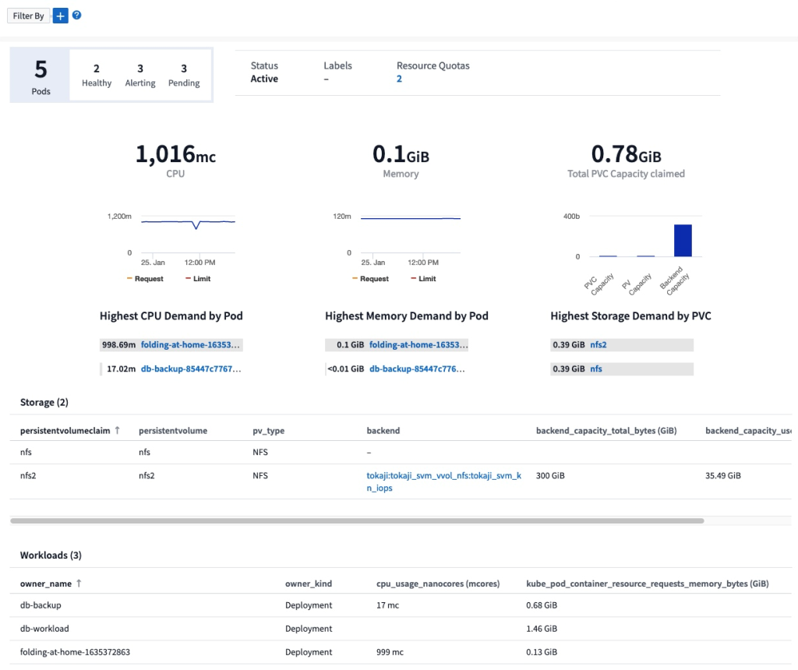
2021년 12월
ONTAP 시스템을 위한 더욱 긴밀한 통합
NetApp 이벤트 관리 시스템(EMS)과의 새로운 통합으로 ONTAP 하드웨어 장애에 대한 알림을 더욱 간편하게 제공합니다."탐색 및 경고" Cloud Insights의 낮은 수준의 ONTAP 메시지를 통해 문제 해결 워크플로우를 알리고 개선하고 ONTAP 요소 관리 툴링에 대한 의존도를 더욱 줄입니다.
로그를 쿼리하는 중입니다
ONTAP 시스템의 경우 Cloud Insights 쿼리에는 강력한 기능이 포함되어 있습니다 "로그 탐색기"EMS 로그 항목을 쉽게 조사하고 문제를 해결할 수 있습니다.

Data Collector 레벨 알림입니다.
경고용 시스템 정의 및 사용자 정의 생성 모니터 외에도 ONTAP 데이터 수집기에 대한 알림 알림을 설정할 수 있으므로 다른 모니터 경고와 상관없이 수집기 레벨 알림에 대한 수신자를 지정할 수 있습니다.
Cloud Secure 역할의 유연성 향상
에 따라 사용자에게 Cloud Secure 기능에 대한 액세스 권한을 부여할 수 있습니다 "역할" 관리자가 설정:
역할 |
Cloud Secure 액세스 |
관리자 |
알림, Forensics, 데이터 수집기, 자동화된 응답 정책 및 Cloud Secure용 API를 비롯한 모든 Cloud Secure 기능을 수행할 수 있습니다. 관리자는 다른 사용자를 초대할 수도 있지만 Cloud Secure 역할만 할당할 수 있습니다. |
사용자 |
알림을 확인 및 관리하고 Forensics를 볼 수 있습니다. 사용자 역할은 알림 상태를 변경하고, 메모를 추가하고, 스냅샷을 수동으로 생성하고, 사용자 액세스를 차단할 수 있습니다. |
게스트 |
알림 및 Forensics를 볼 수 있습니다. 게스트 역할은 알림 상태를 변경하거나, 메모를 추가하거나, 스냅샷을 수동으로 생성하거나, 사용자 액세스를 차단할 수 없습니다. |
운영 체제 지원
CentOS 8.x 지원은 * CentOS 8 Stream * 지원으로 대체됩니다. CentOS 8.x는 2021년 12월 31일에 생산이 종료됩니다.
Data Collector 업데이트
공급업체 변경 사항을 반영하기 위해 여러 Cloud Insights 데이터 수집기 이름이 추가되었습니다.
공급업체/모델 |
이전 이름 |
Dell EMC PowerScale |
Isilon |
HPE Alletra 9000/Primera |
3PAR입니다 |
HPE Alletra 6000 |
민첩성 |
2021년 11월
Adaptive 대시보드
_위젯에서 변수를 사용하는 기능과 속성에 대한 새 변수.
이제 대시보드는 그 어느 때보다 강력하고 유연해졌습니다. 속성 변수가 포함된 적응형 대시보드를 구축하여 대시보드를 즉시 빠르게 필터링할 수 있습니다. 기존 및 기타 기존 구성 요소 사용 "변수" 이제 하나의 상위 레벨 대시보드를 생성하여 전체 환경에 대한 메트릭을 확인하고 리소스 이름, 유형, 위치 등을 기준으로 완벽하게 필터링할 수 있습니다. 위젯에서 숫자 변수를 사용하여 원시 메트릭과 비용(예: 서비스형 스토리지의 경우 GB당 비용)을 연결합니다.


API를 통해 보고 데이터베이스에 액세스합니다
타사 보고, ITSM 및 자동화 툴과의 통합을 위한 향상된 기능: Cloud Insights의 강력한 기능 "API를 참조하십시오" 사용자가 Cognos 보고 환경을 거치지 않고 Cloud Insights 보고 데이터베이스를 직접 쿼리할 수 있습니다.
VM 랜딩 페이지의 POD 테이블
VM과 Kubernetes Pod를 원활하게 탐색할 수 있습니다. 향상된 문제 해결 및 성능 여유 공간 관리를 위해 관련 Kubernetes Pod 테이블이 VM 랜딩 페이지에 표시됩니다.

Data Collector 업데이트
-
이제 ECS가 스토리지 및 노드에 대한 펌웨어를 보고합니다
-
Isilon은 신속한 검색을 개선했습니다
-
Azure NetApp Files는 성능 데이터를 더 빠르게 수집합니다
-
StorageGRID에서 SSO(Single Sign-On) 지원
-
Brocade CLI가 X 및 -4 모델을 올바르게 보고합니다
추가 운영 체제가 지원됩니다
Cloud Insights 획득 장치는 이미 지원되는 운영 체제 외에도 다음과 같은 운영 체제를 지원합니다.
-
CentOS(64비트) 8.4
-
Oracle Enterprise Linux(64비트) 8.4
-
Red Hat Enterprise Linux(64비트) 8.4
2021년 10월
K8S 탐색기 페이지의 필터
"Kubernetes 탐색기" 페이지 필터를 사용하면 Kubernetes 클러스터, 노드 및 포드 탐사에 대해 표시되는 데이터를 집중적으로 제어할 수 있습니다.
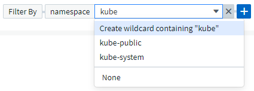
보고를 위한 K8s 데이터
이제 Kubernetes 데이터를 Reporting에서 사용할 수 있으므로 비용청구 또는 기타 보고서를 생성할 수 있습니다. Kubernetes 차지백 데이터를 리포팅으로 전달하려면 Kubernetes 클러스터 및 해당 백 엔드 스토리지로부터 데이터를 받고 Cloud Insights에 연결되어 있어야 합니다. 백 엔드 스토리지로부터 수신된 데이터가 없는 경우 Cloud Insights는 Kubernetes 오브젝트 데이터를 리포팅으로 보낼 수 없습니다.

어두운 테마가 도착했습니다
여러분 중 다수가 어두운 테마를 요청했고, Cloud Insights는 그 해답을 제공해 왔습니다. 밝은 테마와 어두운 테마 간에 전환하려면 사용자 이름 옆에 있는 드롭다운을 클릭합니다.

Data Collector 지원
Cloud Insights 데이터 수집기 중 몇 가지 기능이 개선되었습니다. 다음은 몇 가지 주요 사항입니다.
-
ONTAP용 Amazon FSx의 새 수집기입니다
2021년 9월
이제 성능 정책이 모니터됩니다
모니터링 및 경고 기능은 Cloud Insights 전반에 걸쳐 성능 정책과 위반을 대체했습니다. "모니터를 통한 경고" 귀사의 환경에서 잠재적인 문제 또는 동향을 보다 유연하게 파악하고 파악할 수 있습니다.
모니터의 자동 완성 추천 단어, 와일드카드 및 식
경고를 위해 모니터를 생성할 때 필터를 직접 입력할 수 있는 것은 예측 가능한 일이므로 모니터에 대한 메트릭이나 속성을 쉽게 검색하고 찾을 수 있습니다. 또한 입력한 텍스트를 기반으로 와일드카드 필터를 만들 수 있는 옵션이 제공됩니다.

Telegraf 에이전트를 업데이트했습니다
Telegraf 통합 데이터 수집용 에이전트가 버전 * 1.19.3 * 으로 업데이트되었으며 성능 및 보안 기능이 향상되었습니다. 업데이트를 원하는 사용자는 의 해당 업그레이드 섹션을 참조할 수 있습니다 "Agent 설치" 문서화: 이전 버전의 에이전트는 사용자 작업 없이 계속 작동합니다.
Data Collector 지원
Cloud Insights 데이터 수집기 중 몇 가지 기능이 개선되었습니다. 다음은 몇 가지 주요 사항입니다.
-
Microsoft Hyper-V Collector는 이제 WMI 대신 PowerShell을 사용합니다
-
Azure VM 및 VHD Collector는 이제 병렬 호출로 인해 최대 10배 더 빠릅니다
-
HPE Nimble은 이제 통합 및 iSCSI 구성을 지원합니다
또한 데이터 수집 기능을 항상 개선하고 있기 때문에 다음과 같은 최근 변경 사항이 있습니다.
-
EMC Powerstore의 새 Collector입니다
-
Hitachi Ops Center의 새로운 Collector입니다
-
Hitachi Content Platform의 새로운 수집가
-
향상된 ONTAP 수집기로 Fabric 풀 보고
-
스토리지 풀 및 볼륨 성능을 통해 ANF 향상
-
스토리지 노드 및 스토리지 성능은 물론 버킷 단위의 객체 수가 포함된 EMC ECS가 향상되었습니다
-
스토리지 노드 및 Qtree 메트릭을 통해 EMC Isilon을 개선했습니다
-
볼륨 QoS 제한 메트릭을 통해 EMC Symmetrix를 개선했습니다
-
스토리지 노드의 상위 일련 번호가 포함된 향상된 IBM SVC 및 EMC PowerStore
2021년 8월
새 감사 페이지 사용자 인터페이스
를 클릭합니다 "감사 페이지" 에서는 더욱 깔끔한 인터페이스를 제공하며 이제 감사 이벤트를 .csv 파일로 내보낼 수 있습니다.
향상된 사용자 역할 관리
Cloud Insights에서는 이제 사용자 역할 및 액세스 제어를 보다 자유롭게 할당할 수 있습니다. 이제 사용자는 모니터링, 보고 및 Cloud Secure에 대해 개별적으로 세분화된 사용 권한을 할당할 수 있습니다.
즉, 모니터링, 최적화 및 보고 기능에 대한 관리 액세스 권한을 더 많이 허용하면서 중요한 Cloud Secure 감사 및 활동 데이터에 대한 액세스를 필요한 사용자에게만 제한할 수 있습니다.
"자세한 내용을 확인하십시오" Cloud Insights 설명서의 다양한 액세스 수준에 대해 설명합니다.
2021년 6월
필터의 자동 완성 추천 단어, 와일드카드 및 식
이 Cloud Insights 릴리스에서는 쿼리 또는 위젯에서 필터링할 수 있는 모든 이름과 값을 알 필요가 없습니다. 필터링을 할 때 간단히 입력을 시작하면 Cloud Insights에서 텍스트를 기반으로 값을 제안합니다. 위젯에 표시할 애플리케이션 이름 또는 Kubernetes 속성을 미리 살펴볼 필요가 없습니다.
필터에 입력하면 선택할 수 있는 결과의 스마트 목록과 현재 텍스트를 기반으로 * 와일드카드 필터 * 를 만드는 옵션이 표시됩니다. 이 옵션을 선택하면 와일드카드 식과 일치하는 모든 결과가 반환됩니다. 물론 필터에 추가할 개별 값을 여러 개 선택할 수도 있습니다.

또한 NOT 또는 OR을 사용하여 필터에 * 식 * 을 만들거나 "없음" 옵션을 선택하여 필드의 null 값을 필터링할 수 있습니다.
에 대해 자세히 알아보십시오 "필터링 옵션" 쿼리 및 위젯.
Edition에서 사용할 수 있는 API입니다
Cloud Insights의 강력한 API는 그 어느 때보다 쉽게 액세스할 수 있으며, 알림 API는 이제 Standard 및 Premium Edition에서 사용할 수 있습니다. 각 에디션에 대해 다음 API를 사용할 수 있습니다.
| API 범주 | 기본 | 표준 | 프리미엄 |
|---|---|---|---|
획득 장치 |
|
|
|
데이터 수집 |
|
|
|
경고 |
|
|
|
자산 |
|
|
|
데이터 수집 |
|
|

Kubernetes PV 및 Pod의 가시성
Cloud Insights는 Kubernetes 환경의 백엔드 스토리지에 대한 가시성을 제공하므로 Kubernetes Pod 및 PVS(Persistent Volumes)에 대한 통찰력을 얻을 수 있습니다. 이제 PV 카운터를 통해 단일 Pod에서 PV로, 그리고 백엔드 스토리지 장치로 가는 모든 방법으로 IOPS, 지연 시간 및 처리량과 같은 PV 카운터를 추적할 수 있습니다.
볼륨 또는 내부 볼륨 랜딩 페이지에는 다음 두 개의 새로운 테이블이 표시됩니다.


이러한 새 테이블을 활용하려면 현재 Kubernetes 에이전트를 제거하고 새로 설치하는 것이 좋습니다. 또한 Kubbe-State-Metrics 버전 2.1.0 이상을 설치해야 합니다.
Kubernetes 노드에서 VM 링크까지
이제 Kubernetes 노드 페이지에서 노드의 VM 페이지를 클릭하여 열 수 있습니다. VM 페이지에는 노드 자체에 대한 링크도 포함되어 있습니다.
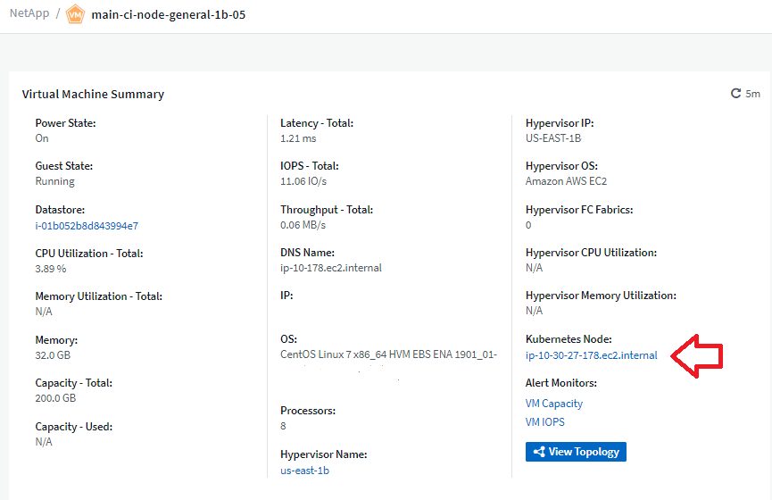
성능 정책을 대체하는 경고 모니터
여러 임계값, 웹후크 및 이메일 알림 전송, 단일 인터페이스를 사용하는 모든 메트릭의 경고 등의 추가 이점을 제공하기 위해 Cloud Insights는 표준 및 프리미엄 에디션 고객을 * 성능 정책 * 에서 * 모니터 * 로 2021년 7월과 8월 사이에 변환합니다. 에 대해 자세히 알아보십시오 "경고 및 모니터"그리고 이 흥미로운 변화에 계속 귀를 집중하세요.
Cloud Secure는 NFS를 지원합니다
Cloud Secure는 이제 ONTAP 데이터 수집을 위해 NFS를 지원합니다. SMB 및 NFS 사용자 액세스를 모니터링하여 랜섬웨어 공격으로부터 데이터를 보호합니다. 또한 Cloud Secure는 NFS 사용자 특성 수집을 위해 Active-Directory 및 LDAP 사용자 디렉토리를 지원합니다.
Cloud Secure 스냅샷 제거
Cloud Secure는 스냅샷 삭제 설정을 기반으로 스냅샷을 자동으로 삭제하여 저장소 공간을 절약하고 수동 스냅샷 삭제 필요성을 줄입니다.

Cloud Secure 데이터 수집 속도
이제 단일 데이터 수집기 에이전트 시스템이 Cloud Secure에 초당 최대 20,000개의 이벤트를 게시할 수 있습니다.
2021년 5월
4월에 적용한 변경 사항은 다음과 같습니다.
Telegraf 에이전트를 업데이트했습니다
Telegraf 통합 데이터 수집용 에이전트가 성능 및 보안 향상을 통해 버전 1.17.3으로 업데이트되었습니다. 업데이트를 원하는 사용자는 의 해당 업그레이드 섹션을 참조할 수 있습니다 "Agent 설치" 문서화: 이전 버전의 에이전트는 사용자 작업 없이 계속 작동합니다.
경고에 정정 조치를 추가합니다
이제 모니터 생성 또는 수정 시 추가 정보 및/또는 수정 조치는 물론 선택적 설명을 추가할 수 있습니다. * 경고 설명 추가 * 섹션을 입력합니다. 설명이 경고와 함께 전송됩니다. insights and corrective actions_field는 경고 처리에 대한 자세한 단계 및 지침을 제공할 수 있으며, 경고 랜딩 페이지의 요약 섹션에 표시됩니다.

모든 에디션용 Cloud Insights API
이제 모든 버전의 Cloud Insights에서 API 액세스를 사용할 수 있습니다. 이제 Basic Edition 사용자는 획득 장치 및 데이터 수집기 작업을 자동화할 수 있으며 Standard Edition 사용자는 메트릭을 쿼리하고 사용자 지정 메트릭을 수집할 수 있습니다. Premium Edition은 모든 API 범주의 모든 사용을 계속 허용합니다.
| API 범주 | 기본 | 표준 | 프리미엄 |
|---|---|---|---|
획득 장치 |
|
|
|
데이터 수집 |
|
|
|
자산 |
|
|
|
데이터 수집 |
|
|
|
데이터 웨어하우스 |
|
API 사용에 대한 자세한 내용은 를 참조하십시오 "API 설명서".
2021년 4월
보다 간편한 모니터 관리
"모니터 그룹화" 환경의 모니터 관리를 간소화합니다. 이제 여러 모니터를 하나로 그룹화하여 일시 중지할 수 있습니다. 예를 들어 인프라 스택에서 업데이트가 발생하는 경우 클릭 한 번으로 모든 장치에서 경고를 일시 중지할 수 있습니다.
모니터 그룹은 ONTAP 장치의 향상된 관리를 Cloud Insights에 제공하는 흥미로운 새 기능의 첫 번째 부분입니다.

Webhook를 사용한 향상된 경고 옵션
많은 상용 응용 프로그램이 지원됩니다 "Webhook" 표준 입력 인터페이스로 사용 가능합니다. 이제 Cloud Insights는 이러한 다양한 전달 채널을 지원하며 Slack, PagerDuty, Teams 및 AchAN등에 대한 기본 템플릿을 제공할 뿐 아니라 사용자 지정 가능한 일반 웹 후크를 제공하여 다른 많은 애플리케이션을 지원합니다.

개선된 장치 식별
모니터링 및 문제 해결 기능을 개선하고 정확한 보고 기능을 제공하기 위해 IP 주소 또는 기타 식별자 대신 장치 이름을 이해하는 것이 좋습니다. Cloud Insights는 이제 이라는 규칙 기반 접근 방식을 사용하여 환경에 있는 스토리지 및 물리적 호스트 디바이스의 이름을 식별하는 자동 방법을 통합합니다 "* 장치 해상도 *", * 관리 * 메뉴에서 사용할 수 있습니다.
더 많은 것을 요청하셨습니다!
고객이 자주 사용하는 질문에는 데이터 범위를 시각화하는 기본 옵션이 더 많이 추가되었으므로, 시간 범위 선택을 통해 서비스 전체에서 사용할 수 있는 다음과 같은 다섯 가지 새로운 선택 사항이 추가되었습니다.
-
마지막 30분
-
최근 2시간
-
최근 6시간
-
최근 12시간
-
최근 2일
하나의 Cloud Insights 환경에서 다중 구독
4월 2일부터 Cloud Insights는 단일 Cloud Insights 인스턴스에서 고객에 대해 동일한 에디션 유형의 여러 구독을 지원합니다. 이를 통해 고객은 Cloud Insights 서브스크립션의 일부를 인프라 구매와 상호 연계할 수 있습니다. 여러 서브스크립션에 대한 지원은 NetApp 세일즈 팀에 문의하십시오.
경로를 선택합니다
Cloud Insights를 설정하는 동안 모니터링 및 알림 또는 랜섬웨어 및 내부자 위협 감지로 시작할지 여부를 선택할 수 있습니다. Cloud Insights는 선택한 경로를 기반으로 시작 환경을 구성합니다. 나중에 언제든지 다른 경로를 구성할 수 있습니다.
Cloud Secure 온보딩이 더욱 간편해졌습니다
또한 새로운 단계별 설정 검사 목록을 통해 Cloud Secure 사용을 훨씬 쉽게 시작할 수 있습니다.

항상 그렇듯이, 여러분의 제안을 듣고 싶습니다! ng-cloudinsights-customerfeedback@netapp.com 으로 이메일을 보내주십시오.
2021년 2월
Telegraf 에이전트를 업데이트했습니다
Telegraf 통합 데이터를 수집하는 에이전트가 취약점 및 버그 수정을 포함한 버전 1.17.0으로 업데이트되었습니다.
Cloud Cost Analyzer
Spot by NetApp의 클라우드 비용 을 통해 자세한 정보를 얻을 수 있습니다 "비용 분석" 비용, 비용 및 추정치를 기준으로 현재 환경의 클라우드 사용량을 파악할 수 있습니다. Cloud Cost 대시보드에서는 클라우드 비용을 명확하게 파악하고 개별 워크로드, 계정 및 서비스를 세부적으로 확인할 수 있습니다.
Cloud Cost는 다음과 같은 주요 과제를 해결할 수 있습니다.
-
클라우드 비용 추적 및 모니터링
-
폐기물 및 잠재적 최적화 영역 식별
-
실행 가능한 작업 항목 제공
클라우드 비용은 모니터링에 중점을 둡니다. 자동 비용 절감 및 환경 최적화를 사용하려면 NetApp 계정을 전체 Spot으로 업그레이드하십시오.
필터를 사용하여 Null 값이 있는 개체를 쿼리합니다
이제 Cloud Insights에서는 필터를 사용하여 null/none 값을 갖는 속성 및 메트릭을 검색할 수 있습니다. 다음 위치의 모든 속성/메트릭에 대해 이 필터링을 수행할 수 있습니다.
-
를 클릭합니다
-
대시보드 위젯 및 페이지 변수
-
를 클릭합니다
-
모니터를 생성할 때
null/none 값을 필터링하려면 해당 필터 드롭다운에 표시될 때 _None_옵션을 선택하면 됩니다.

다중 지역 지원
오늘부터 전 세계 여러 지역에서 Cloud Insights 서비스를 제공하여 미국 이외의 지역에 거주하는 고객의 성능을 향상시키고 보안을 강화합니다. Cloud Insights/Cloud Secure는 환경이 구축된 지역에 따라 정보를 저장합니다.
을 클릭합니다 "여기" 를 참조하십시오.
2021년 1월
추가 ONTAP 메트릭의 이름이 변경되었습니다
ONTAP 시스템에서 데이터 수집의 효율성을 높이기 위한 지속적인 노력의 일환으로, 다음과 같은 ONTAP 메트릭의 이름이 변경되었습니다.
이러한 메트릭을 사용하여 기존 대시보드 위젯이나 쿼리를 작성한 경우 새 메트릭 이름을 사용하려면 해당 위젯을 편집하거나 다시 생성해야 합니다.
| 이전 메트릭 이름 | 새 메트릭 이름 |
|---|---|
netapp_ontap.disk_f성분.total_transfers |
NetApp_ONTAP.DISK_FURNENT.TOTAL_IOPS |
netapp_ontap.disk.total_transfers |
NetApp_ONTAP.disk.total_IOPS입니다 |
NetApp_ONTAP.FCP_lif.read_data를 참조하십시오 |
NetApp_ONTAP.FCP_lif.read_throughput을 지정합니다 |
NetApp_ONTAP.FCP_lif.write_data를 참조하십시오 |
NetApp_ONTAP.FCP_lif.write_throughput을 지정합니다 |
NetApp_ONTAP.iscsi_lif.read_data를 참조하십시오 |
NetApp_ONTAP.iscsi_lif.read_throughput을 참조하십시오 |
NetApp_ONTAP.iscsi_lif.write_data를 참조하십시오 |
NetApp_ONTAP.iscsi_lif.write_throughput을 설정합니다 |
netapp_ontap.lif.recv_data를 참조하십시오 |
netapp_ontap.lif.recv_throughput을 지정합니다 |
netapp_ontap.lif.sent_data |
netapp_ontap.lif.sent_throughput |
NetApp_ONTAP.LUN.read_data를 참조하십시오 |
NetApp_ONTAP.LUN.read_throughput을 설정합니다 |
NetApp_ONTAP.LUN.write_data를 참조하십시오 |
NetApp_ONTAP.LUN.write_throughput을 지정합니다 |
NetApp_ONTAP.NIC_COMMON.Rx_바이트 |
NetApp_ONTAP.NIC_COMMON.Rx_Throughput |
NetApp_ONTAP.NIC_COMMON.TX_바이트 |
netapp_ontap.nic_common.tx_throughput을 지정합니다 |
NetApp_ONTAP.path.read_data를 입력합니다 |
NetApp_ONTAP.path.read_throughput을 지정합니다 |
NetApp_ONTAP.path.write_data를 입력합니다 |
netapp_ontap.path.write_throughput을 지정합니다 |
NetApp_ONTAP.path.total_data를 나타냅니다 |
NetApp_ONTAP.path.total_throughput을 지정합니다 |
NetApp_ONTAP.policy_group.read_data를 참조하십시오 |
NetApp_ONTAP.policy_group.read_throughput을 설정합니다 |
NetApp_ONTAP.policy_group.write_data를 나타냅니다 |
NetApp_ONTAP.policy_group.write_throughput을 설정합니다 |
NetApp_ONTAP.policy_group.other_data를 지정합니다 |
NetApp_ONTAP.policy_group.other_throughput을 설정합니다 |
NetApp_ONTAP.policy_group.total_data를 나타냅니다 |
NetApp_ONTAP.policy_group.total_throughput을 지정합니다 |
NetApp_ONTAP.SYSTEM_NODE.DISK_DATA_READ 를 참조하십시오 |
NetApp_ONTAP.system_node.disk_throughput_read 를 참조하십시오 |
NetApp_ONTAP.system_node.disk_data_Written |
NetApp_ONTAP.system_node.disk_throughput_Written |
NetApp_ONTAP.SYSTEM_NODE.HDD_DATA_READ 를 참조하십시오 |
NetApp_ONTAP.system_node.hdd_throughput_read 를 참조하십시오 |
NetApp_ONTAP.system_node.hdd_data_Written |
NetApp_ONTAP.system_node.hdd_throughput_Written |
NetApp_ONTAP.SYSTEM_NODE.SSD_DATA_READ 를 참조하십시오 |
NetApp_ONTAP.system_node.ssd_throughput_read 를 참조하십시오 |
NetApp_ONTAP.system_node.ssd_data_Written |
NetApp_ONTAP.system_node.ssd_throughput_Written |
netapp_ontap.system_node.net_data_recv |
netapp_ontap.system_node.net_throughput_recv |
netapp_ontap.system_node.net_data_sent |
netapp_ontap.system_node.net_throughput_sent |
NetApp_ONTAP.SYSTEM_NODE.FCP_DATA_REV |
NetApp_ONTAP.system_node.fcp_throughput_recv를 지정합니다 |
NetApp_ONTAP.SYSTEM_NODE.FCP_DATA_Sent |
NetApp_ONTAP.system_node.fcp_throughput_sent 를 보냈습니다 |
NetApp_ONTAP.volume_node.cifs_read_data를 입력합니다 |
NetApp_ONTAP.volume_node.cifs_read_throughput을 지정합니다 |
NetApp_ONTAP.volume_node.cifs_write_data를 입력합니다 |
NetApp_ONTAP.volume_node.cifs_write_throughput을 지정합니다 |
NetApp_ONTAP.VOLUME_NODE.NFS_READ_DATA |
NetApp_ONTAP.volume_node.nfs_read_throughput을 지정합니다 |
NetApp_ONTAP.VOLUME_NODE.NFS_WRITE_DATA |
NetApp_ONTAP.volume_node.nfs_write_throughput을 지정합니다 |
NetApp_ONTAP.volume_node.iscsi_read_data를 참조하십시오 |
NetApp_ONTAP.volume_node.iscsi_read_throughput을 지정합니다 |
NetApp_ONTAP.VOLUME_NODE.iSCSI_WRITE_DATA |
NetApp_ONTAP.volume_node.iscsi_write_throughput을 지정합니다 |
NetApp_ONTAP.VOLUME_NODE.FCP_READ_DATA |
NetApp_ONTAP.volume_node.fcp_read_throughput을 지정합니다 |
NetApp_ONTAP.VOLUME_NODE.FCP_WRITE_DATA |
NetApp_ONTAP.volume_node.fcp_write_throughput을 지정합니다 |
NetApp_ONTAP.volume.read_data를 참조하십시오 |
NetApp_ONTAP.volume.read_throughput을 설정합니다 |
NetApp_ONTAP.volume.write_data를 참조하십시오 |
NetApp_ONTAP.volume.write_throughput을 설정합니다 |
netapp_ontap.워크로드.read_data |
netapp_ontap.워크로드.read_throughput을 선택합니다 |
netapp_ontap.워크로드.write_data |
netapp_ontap.워크로드.write_throughput |
NetApp_ONTAP.워크로드_볼륨.읽기_데이터 |
NetApp_ONTAP.워크로드_볼륨.읽기_처리량 |
NetApp_ONTAP.워크로드_볼륨.write_data |
NetApp_ONTAP.Workload_volume.write_throughput을 설정합니다 |
새로운 Kubernetes Explorer를 도입했습니다
를 클릭합니다 "Kubernetes 탐색기" 단순한 Kubernetes 클러스터 토폴로지 뷰를 제공하므로 비전문가도 클러스터 레벨에서 컨테이너 및 스토리지에 이르는 문제와 종속성을 빠르게 식별할 수 있습니다.
Kubernetes 환경에서 클러스터, 노드, Pod, 컨테이너, 스토리지의 상태, 사용 상태 및 상태에 대한 Kubernetes Explorer의 세부 정보를 사용하여 다양한 정보를 살펴볼 수 있습니다.

2020년 12월
단순한 Kubernetes 설치
Kubernetes Agent 설치를 간소화하여 더 적은 수의 사용자 상호 작용이 필요합니다. "Kubernetes Agent 설치 중" Kubernetes 데이터 수집도 포함됩니다.
2020년 11월
추가 대시보드
다음과 같은 새로운 ONTAP 중심 대시보드가 갤러리에 추가되었으며 가져올 수 있습니다.
-
ONTAP: 성능 및 용량을 집계합니다
-
ONTAP FAS/AFF - 용량 활용률
-
ONTAP FAS/AFF - 클러스터 용량
-
ONTAP FAS/AFF 효율성
-
ONTAP FAS/AFF-FlexVol 성능
-
ONTAP FAS/AFF 노드 운영/최적의 포인트
-
ONTAP FAS/AFF - 사전 사후 용량 효율성
-
ONTAP: 네트워크 포트 작동
-
ONTAP: 노드 프로토콜 성능
-
ONTAP: 노드 워크로드 성능(프런트엔드)
-
ONTAP: 프로세서
-
ONTAP: SVM 워크로드 성능(프런트엔드)
-
ONTAP: 볼륨 워크로드 성능(프런트엔드)
테이블 위젯에서 열 이름 바꾸기
편집 모드에서 위젯을 열고 열 상단의 메뉴를 클릭하여 테이블 위젯의 Metrics 및 Attributes 섹션에서 열 이름을 바꿀 수 있습니다. 새 이름을 입력하고 _Save_를 클릭하거나 _Reset_을 클릭하여 열을 원래 이름으로 다시 설정합니다.
이는 테이블 위젯의 열 표시 이름에만 영향을 미치며, 메트릭/속성 이름은 기본 데이터 자체에서 변경되지 않습니다.

2020년 10월
통합 데이터의 기본 확장
이제 테이블 위젯 그룹화를 통해 Kubernetes, ONTAP 고급 데이터 및 에이전트 노드 메트릭의 기본 확장이 가능합니다. 예를 들어, Kubernetes_Nodes_BY_Cluster_를 그룹화할 경우 각 클러스터에 대한 테이블에 행이 표시됩니다. 그런 다음 각 클러스터 행을 확장하여 노드 오브젝트 목록을 볼 수 있습니다.
Basic Edition 기술 지원
이제 표준 및 프리미엄 버전 외에 Cloud Insights Basic Edition 가입자에 대한 기술 지원을 받을 수 있습니다. 또한 Cloud Insights은 NetApp 지원 티켓 생성을 위한 워크플로우를 간소화했습니다.
Cloud Secure 공용 API
Cloud Secure 지원 "REST API" 활동 및 경고 정보에 액세스합니다. 이 작업은 Cloud Secure 관리 UI를 통해 생성된 API 액세스 토큰을 사용하여 수행되며, 이 UI는 REST API에 액세스하는 데 사용됩니다. 이러한 REST API에 대한 Swagger 문서는 Cloud Secure와 통합됩니다.
2020년 9월
통합 데이터가 있는 쿼리 페이지
Cloud Insights 쿼리 페이지는 통합 데이터(예: Kubernetes, ONTAP 고급 메트릭 등)를 지원합니다. 통합 데이터로 작업할 때 쿼리 결과 테이블에는 왼쪽에 개체/그룹화가 있는 "분할 화면" 보기와 오른쪽에 개체 데이터(특성/메트릭)가 표시됩니다. 통합 데이터를 그룹화하기 위해 여러 특성을 선택할 수도 있습니다.

테이블 위젯에서 단위 표시 형식
이제 메트릭/카운터 데이터(예: 기가바이트, MB/초 등)를 표시하는 열의 테이블 위젯에서 단위 표시 형식을 사용할 수 있습니다. 메트릭의 표시 단위를 변경하려면 열 머리글에서 "점 3개" 메뉴를 클릭하고 "단위 표시"를 선택합니다. 사용 가능한 단위 중에서 선택할 수 있습니다. 사용 가능한 단위는 표시 열의 메트릭 데이터 유형에 따라 달라집니다.

획득 장치 세부 정보 페이지
이제 획득 장치에 자체 랜딩 페이지가 있어 각 AU에 유용한 세부 정보와 문제 해결에 도움이 되는 정보를 제공합니다. 를 클릭합니다 "AU 세부 정보 페이지" AU의 데이터 수집기에 대한 링크와 유용한 상태 정보를 제공합니다.
Cloud Secure Docker 종속성이 제거되었습니다
Cloud Secure의 Docker 의존성이 제거되었습니다. Cloud Secure 에이전트를 설치하는 데 Docker가 더 이상 필요하지 않습니다.
보고 사용자 역할
보고 기능이 있는 Cloud Insights 프리미엄 에디션이 있는 경우 사용자 환경의 모든 Cloud Insights 사용자는 보고 응용 프로그램(즉 Cognos). 메뉴에서 * 보고서 * 링크를 클릭하면 자동으로 보고에 로그인됩니다.
Cloud Insights의 사용자 역할에 따라 가 결정됩니다 "보고 사용자 역할":
Cloud Insights 역할 |
보고 역할 |
보고 권한 |
게스트 |
소비자 |
에서는 보고서를 보고 일정을 잡고 실행할 수 있으며 언어 및 표준 시간대와 같은 개인 기본 설정을 설정할 수 있습니다. 소비자는 보고서를 만들거나 관리 작업을 수행할 수 없습니다. |
사용자 |
저자 |
는 모든 소비자 기능을 수행할 뿐 아니라 보고서 및 대시보드를 생성 및 관리할 수 있습니다. |
관리자 |
관리자 |
보고서 구성, 보고 작업 종료 및 재시작 등의 모든 관리 작업과 모든 작성자 기능을 수행할 수 있습니다. |
|
|
Cloud Insights 보고는 500MU 이상의 환경에서 사용할 수 있습니다. |

|
현재 Premium Edition 고객이고 보고서를 보관하려는 경우 이 내용을 읽어보십시오 "기존 고객을 위한 중요 참고 사항". |
데이터 수집용 새로운 API 범주입니다
Cloud Insights는 * 데이터 수집 * API 범주를 추가하여 사용자 지정 데이터 및 에이전트를 보다 강력하게 제어할 수 있도록 합니다. 이 API 범주와 기타 API 범주에 대한 자세한 내용은 Cloud Insights에서 * 관리자 > API 액세스 * 로 이동하고 _API Documentation_link를 클릭하여 확인할 수 있습니다. AU 세부 정보 페이지와 AU 목록 페이지에 표시되는 메모 필드에서 AU에 메모를 첨부할 수도 있습니다.
2020년 8월
모니터링 및 경고
현재 스토리지 오브젝트, VM, EC2 및 포트에 대한 성능 정책을 설정하는 기능 외에도 Cloud Insights Standard Edition에는 이제 기능이 포함되어 있습니다 "모니터를 구성합니다" Kubernetes, ONTAP 고급 메트릭 및 Telegraf 플러그인의 통합 데이터 임계치 경고를 트리거할 각 개체 메트릭에 대한 모니터를 만들고, 경고 수준 또는 위험 수준 임계값에 대한 조건을 설정하고, 각 수준에 대해 원하는 이메일 수신자를 지정하기만 하면 됩니다. 그러면 됩니다 "알림을 보고 관리합니다" 추세를 추적하거나 문제를 해결합니다.

2020년 7월
Cloud Secure_스냅샷_조치 수행
Cloud Secure는 악의적인 활동이 감지되면 스냅샷을 자동으로 생성하여 데이터를 보호하고 데이터가 안전하게 백업되도록 합니다.
랜섬웨어 공격 또는 기타 비정상적인 사용자 활동이 감지되면 스냅샷을 생성하는 자동화된 응답 정책을 정의할 수 있습니다. 알림 페이지에서 수동으로 스냅샷을 생성할 수도 있습니다.
자동 스냅샷 촬영: 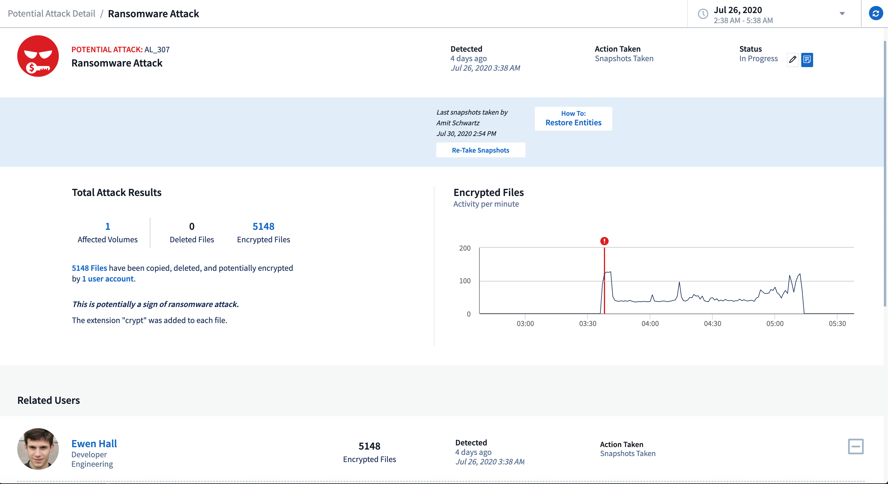
수동 스냅샷:
메트릭/카운터 업데이트
Cloud Insights UI 및 REST API에서 사용할 수 있는 용량 카운터는 다음과 같습니다. 이전에는 이러한 카운터는 데이터 웨어하우스/보고에만 사용할 수 있었습니다.
| 개체 유형 | 카운터 |
|---|---|
스토리지 |
용량 - 스페어 물리적 용량 - 실패한 물리적 용량 |
스토리지 풀 |
데이터 용량 - 사용된 데이터 용량 - 총 기타 용량 - 사용된 기타 용량 - 총 용량 - 물리적 용량 - 소프트 제한값 |
내부 볼륨 |
Data Capacity - Used Data Capacity - Total Other Capacity - Used Other Capacity - Total Clone Saved Capacity - Total |
Cloud Secure 잠재적 공격 탐지
Cloud Secure는 이제 랜섬웨어와 같은 잠재적인 공격을 탐지합니다. 경고 목록 페이지에서 경고를 클릭하여 다음을 보여 주는 세부 정보 페이지를 엽니다.
-
공격 시간
-
연결된 사용자 및 파일 작업
-
조치를 취했습니다
-
보안 침해 가능성을 추적하는 데 도움이 되는 추가 정보입니다
잠재적인 랜섬웨어 공격을 보여주는 경고 페이지:
잠재적인 랜섬웨어 공격에 대한 상세 페이지:
AWS를 통해 Premium Edition을 구독하십시오
Cloud Insights 평가판을 사용하면 됩니다 "자체 구독" AWS Marketplace에서 Cloud Insights Standard Edition 또는 Premium Edition으로 이동합니다. 이전에는 AWS Marketplace를 통해서만 Standard Edition으로 자체 구독할 수 있었습니다.
향상된 테이블 위젯
대시보드/자산 페이지 테이블 위젯에는 다음과 같은 개선 사항이 포함되어 있습니다.
-
"분할 화면" 보기: 테이블 위젯은 왼쪽의 오브젝트/그룹화와 오른쪽의 오브젝트 데이터(특성/메트릭)를 표시합니다.

-
다중 속성 그룹화: 통합 데이터(Kubernetes, ONTAP 고급 메트릭, Docker 등)의 경우 그룹화할 속성을 여러 개 선택할 수 있습니다. 선택한 그룹화 속성/에 따라 데이터가 표시됩니다.
통합 데이터와 그룹화(편집 모드에 표시):

-
인프라스트럭처 데이터(스토리지, EC2, VM, 포트 등)는 이전과 같은 단일 속성을 기준으로 그룹화됩니다. 개체가 아닌 특성으로 그룹화하면 그룹 행을 확장하여 그룹 내의 모든 개체를 볼 수 있습니다.
인프라 데이터를 사용하여 그룹화(표시 모드에 표시):

메트릭 필터링
이제 위젯에서 객체의 속성을 필터링하는 것 외에도 메트릭을 필터링할 수 있습니다.

통합 데이터(Kubernetes, ONTAP 고급 데이터 등)를 사용할 경우, 메트릭 필터링은 필터가 데이터 시리즈의 집계 값에 대해 작동하고 잠재적으로 전체 오브젝트를 차트에서 제거할 수 있는 인프라 데이터(스토리지, VM, 포트 등)와 달리 표시된 데이터 시리즈에서 개별/일치하지 않는 데이터 요소를 제거합니다.

ONTAP 고급 카운터 데이터
Cloud Insights는 ONTAP 장치에서 수집된 다양한 카운터 및 메트릭을 제공하는 NetApp의 ONTAP별 * 고급 카운터 데이터 * 를 활용합니다. ONTAP 고급 카운터 데이터는 모든 NetApp ONTAP 고객에게 제공됩니다. 이러한 메트릭을 통해 Cloud Insights 위젯 및 대시보드에서 사용자 지정 및 광범위한 시각화를 수행할 수 있습니다.
ONTAP 고급 카운터는 위젯 쿼리에서 "NetApp_ONTAP"을 검색하고 카운터 중에서 선택하여 찾을 수 있습니다.

카운터 이름의 추가 부분을 입력하여 검색을 구체화할 수 있습니다. 예를 들면 다음과 같습니다.
-
lif
-
골재 _
-
offbox_Vscan_server
-
있습니다
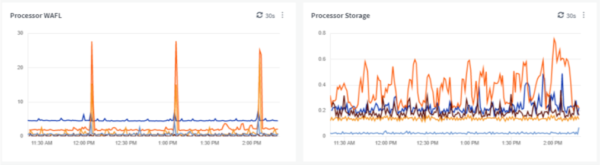

다음 사항에 유의하십시오.
-
새 ONTAP 데이터 수집기에 대해 고급 데이터 수집이 기본적으로 활성화됩니다. 기존 ONTAP 데이터 수집기에 대한 고급 데이터 수집을 활성화하려면 데이터 수집기를 편집하고 _고급 구성_섹션을 확장합니다.
-
7-Mode ONTAP에서는 고급 데이터 수집을 사용할 수 없습니다.
고급 카운터 대시보드
Cloud Insights에는 Aggregate 성능, 볼륨 워크로드, 프로세서 활동 등의 항목에 대한 ONTAP 고급 카운터를 시각화하는 데 도움이 되도록 미리 디자인된 다양한 대시보드가 제공됩니다. ONTAP 데이터 수집기가 하나 이상 구성되어 있는 경우 대시보드 목록 페이지의 대시보드 갤러리에서 가져올 수 있습니다.
자세한 정보
ONTAP 고급 데이터에 대한 자세한 내용은 다음 링크를 참조하십시오.
-
https://mysupport.netapp.com/site/tools/tool-eula/netapp-harvest (참고: NetApp Support에 로그인해야 합니다.)
정책 및 위반 메뉴
성능 정책 및 위반 사항은 * 알림 * 메뉴에서 확인할 수 있습니다. 정책 및 위반 기능은 변경되지 않습니다.

Telegraf 에이전트를 업데이트했습니다
Telegraf 통합 데이터 수집용 에이전트가 로 업데이트되었습니다 "버전 1.14"여기에는 버그 수정, 보안 수정 및 새 플러그인이 포함됩니다.
참고: Kubernetes 플랫폼에서 Kubernetes 데이터 수집기를 구성할 때 "clusterrole" 특성에 대한 권한이 부족하여 로그에 "HTTP 상태 403 사용 금지" 오류가 표시될 수 있습니다.
이 문제를 해결하려면 끝점 액세스 클러스터 역할의 _rules 섹션에 강조 표시된 다음 Teleraf 포드를 다시 시작합니다.
rules: - apiGroups: - "" - apps - autoscaling - batch - extensions - policy - rbac.authorization.k8s.io attributeRestrictions: null resources: - nodes/metrics - nodes/proxy <== Add this line - nodes/stats - pods <== Add this line verbs: - get - list <== Add this line
2020년 6월
단순화된 Data Collector 오류 보고
데이터 수집기 페이지의 Send Error Report 단추를 사용하면 데이터 수집기 오류를 쉽게 보고할 수 있습니다. 버튼을 클릭하면 오류에 대한 기본 정보가 NetApp으로 전송되고 문제 조사에 대한 프롬프트가 표시됩니다. 이 버튼을 누르면 Cloud Insights에서 NetApp에 통보되었음을 인정하고 오류 보고서 버튼을 사용하여 해당 데이터 수집기에 대한 오류 보고서를 전송할 수 있음을 표시합니다. 이 버튼은 브라우저 페이지를 새로 고칠 때까지 비활성 상태로 유지됩니다.

위젯 개선
대시보드 위젯에서 다음과 같은 개선 사항이 개선되었습니다. 이러한 개선 사항은 미리 보기 기능으로 간주되므로 일부 Cloud Insights 환경에서는 사용하지 못할 수 있습니다.
-
새로운 오브젝트/메트릭 선택기: 오브젝트(스토리지, 디스크, 포트, 노드 등) 및 관련 메트릭(IOPS, 지연 시간, CPU 수 등)을 강력한 검색 기능을 갖춘 단일 포함 드롭다운의 위젯에서 사용할 수 있습니다. 드롭다운에 부분 용어를 여러 개 입력할 수 있으며, Cloud Insights는 해당 조건을 충족하는 모든 객체 메트릭을 나열합니다.

-
다중 태그 그룹화: 통합 데이터(Kubernetes 등)를 사용하여 작업할 때는 여러 태그/속성으로 데이터를 그룹화할 수 있습니다. 예를 들어, Kubernetes 네임스페이스 및 컨테이너 이름별로 메모리 사용을 합합니다.

2020년 5월
보고 사용자 역할
보고를 위해 다음 역할이 추가되었습니다.
-
Cloud Insights 소비자: 보고서를 실행하고 볼 수 있습니다
-
Cloud Insights 작성자: 소비자 기능을 수행하고 보고서 및 대시보드를 생성 및 관리할 수 있습니다
-
Cloud Insights 관리자: 작성자 기능은 물론 모든 관리 작업을 수행할 수 있습니다
Cloud Secure 업데이트
Cloud Insights에는 다음과 같은 최근 Cloud Secure 변경 사항이 포함되어 있습니다.
Forensics > Activity Forensics 페이지에서 사용자 활동을 분석하고 조사하기 위한 두 가지 보기를 제공합니다.
-
사용자 활동에 초점을 맞춘 활동 보기(어떤 작업? 수행 위치)
-
요소 보기 - 사용자가 액세스한 파일에 중점을 둡니다.

또한 알림 이메일 알림에는 이제 알림 페이지에 대한 직접 링크가 포함되어 있습니다.
대시보드 그룹화
대시보드 그룹화를 통해 더 나은 성능을 얻을 수 있습니다 "대시보드 관리" 대해 알 수 있습니다. 스토리지 또는 가상 머신 등의 "원스톱" 관리를 위해 관련 대시보드를 그룹에 추가할 수 있습니다.
그룹은 사용자별로 사용자 지정되므로 한 사람의 그룹은 다른 사람의 그룹과 다를 수 있습니다. 필요한 만큼 그룹을 포함할 수 있으며 각 그룹에 원하는 만큼의 대시보드를 포함할 수 있습니다.

대시보드 고정
즐겨찾기가 항상 목록의 맨 위에 표시되도록 대시보드를 고정할 수 있습니다.

TV 모드 및 자동 새로 고침
"TV 모드 및 자동 새로 고침" 대시보드 또는 자산 페이지에 데이터를 거의 실시간으로 표시할 수 있습니다.
-
* TV 모드 * 는 깔끔한 디스플레이를 제공합니다. 탐색 메뉴가 숨겨지므로 데이터 디스플레이에 더 많은 화면 공간을 제공합니다.
-
대시보드 및 자산 랜딩 페이지의 위젯에 있는 데이터 * 선택한 대시보드 시간 범위(또는 대시보드 시간을 재정의하도록 설정된 경우 위젯 시간 범위)에 따라 새로 고침 간격(매 10초)에 따라 자동으로 새로 고침 *.
TV 모드와 자동 새로 고침이 결합되어 Cloud Insights 데이터를 실시간으로 볼 수 있어 원활한 데모 또는 사내 모니터링에 적합합니다.
2020년 4월
새로운 대시보드 시간 범위 선택
대시보드 및 기타 Cloud Insights 페이지의 시간 범위 선택에는 _Last 1 Hour_와 _Last 15 Minutes_가 포함됩니다.
Cloud Secure 업데이트
Cloud Insights에는 다음과 같은 최근 Cloud Secure 변경 사항이 포함되어 있습니다.
-
사용자가 권한, 소유자 또는 그룹 소유권을 변경하는지 여부를 감지하기 위해 파일 및 폴더 메타데이터 변경 인식 기능이 향상되었습니다.
-
사용자 활동 보고서를 CSV로 내보냅니다.
Cloud Secure는 파일 및 폴더에 대한 모든 사용자 액세스 작업을 모니터링하고 감사합니다. 활동 감사를 통해 내부 보안 정책을 준수하고 PCI, GDPR, HIPAA 등의 외부 규정 준수 요구 사항을 충족하고 데이터 침해 및 보안 사고 조사를 수행할 수 있습니다.
기본 대시보드 시간입니다
이제 대시보드의 기본 시간 범위는 24시간이 아닌 3시간입니다.
최적화된 집계 시간
최적화 "시간 집계" 시계열 위젯(라인, 스플라인, 면적 및 누적 면적 차트)의 간격이 3시간 및 24시간 대시보드/위젯 시간 범위에 더 자주 표시되므로 데이터를 더 빠르게 차트 작성할 수 있습니다.
-
3시간 범위는 1분 집계 간격으로 최적화됩니다. 이전에는 5분이 소요되었습니다.
-
24시간 시간 범위는 30분 집계 간격으로 최적화됩니다. 이전에는 1시간이었습니다.
사용자 지정 간격을 설정하여 최적화된 집계를 재정의할 수 있습니다.
단위 자동 형식을 표시합니다
대부분의 위젯에서 Cloud Insights는 값을 표시할 기본 단위를 알고 있습니다(예: Megabytes,수천,percentage,milliseconds(ms), 기타 등등 "자동 서식 지정" 가장 읽기 쉬운 장치로 위젯입니다. 예를 들어, 1,234,567,890바이트의 데이터 값은 1.23 기비바이트로 자동 포맷됩니다. 대부분의 경우 Cloud Insights는 취득 데이터에 가장 적합한 형식을 알고 있습니다. 최상의 형식을 모르는 경우 또는 자동 서식을 무시하려는 위젯에서 원하는 형식을 선택할 수 있습니다.

API를 사용하여 주석을 가져옵니다
Cloud Insights 프리미엄 에디션의 강력한 API를 통해 지금 바로 사용할 수 있습니다 "주석 불러오기" 그런 다음 .csv 파일을 사용하여 개체에 할당합니다. 같은 방법으로 응용 프로그램을 가져오고 업무 엔티티를 할당할 수도 있습니다.

간단한 위젯 선택기
모든 위젯 유형을 한 번에 하나의 보기로 표시하는 새로운 위젯 선택기로 대시보드와 자산 랜딩 페이지에 위젯을 추가하는 것이 더 쉬워졌습니다. 따라서 사용자는 더 이상 위젯 유형 목록을 스크롤하여 추가할 위젯을 찾을 필요가 없습니다. 관련 위젯은 새로운 셀렉터에서 가까운 색으로 조정되고 그룹화됩니다.

2020년 2월
Premium Edition을 사용하는 API
Cloud Insights 프리미엄 에디션은 와 함께 제공됩니다 "강력한 API" Cloud Insights를 CMDB 또는 기타 티켓 시스템과 같은 다른 애플리케이션과 통합하는 데 사용할 수 있습니다.
자세한 Swagger 기반 정보는 * API Documentation * 링크 아래의 * Admin > API ACCESS * 에서 확인할 수 있습니다. Swagger는 API에 대한 간단한 설명 및 사용 정보를 제공하며 사용자 환경에서 각 API를 사용해 볼 수 있습니다.
Cloud Insights API는 액세스 토큰을 사용하여 자산 또는 컬렉션과 같은 API 범주에 대한 권한 기반 액세스를 제공합니다.

Data Collector 추가 후 초기 폴링
이전에는 새 데이터 수집기를 구성한 후 Cloud Insights는 즉시 데이터 수집기를 폴링하여 _INVENTORY_DATA를 수집하지만 구성된 성능 폴링 간격(일반적으로 15분)이 될 때까지 기다렸다가 initial_performance_data를 수집합니다. 그런 다음 두 번째 성능 폴링을 시작하기 전에 다른 간격을 기다리게 됩니다. 이는 새 데이터 수집기에서 의미 있는 데이터를 획득하기 전에 최대 _30분_이 걸리기 때문입니다.
데이터 수집기 "폴링" 첫 번째 성능 폴링이 완료된 후 몇 초 이내에 두 번째 성능 폴링이 발생하면서 인벤토리 폴링 직후 초기 성능 폴링이 크게 개선되었습니다. 이를 통해 Cloud Insights는 매우 짧은 시간 내에 대시보드와 그래프에 유용한 데이터를 표시할 수 있습니다.
이 폴링 동작은 기존 데이터 수집기의 구성을 편집한 후에도 발생합니다.
간편한 위젯 복제
대시보드 또는 랜딩 페이지에서 위젯의 복사본을 만드는 것이 그 어느 때보다 쉬워졌습니다. 대시보드 편집 모드에서 위젯의 메뉴를 클릭하고 * 복제 * 를 선택합니다. 위젯 편집기가 시작되고, 원래 위젯의 구성이 미리 채워지고 위젯 이름에 "copy" 접미사가 붙습니다. 필요한 사항을 쉽게 변경하고 새 위젯을 저장할 수 있습니다. 위젯은 대시보드 하단에 배치되며 필요에 따라 배치할 수 있습니다. 모든 변경이 완료되면 대시보드를 저장해야 합니다.

SSO(Single Sign-On)
Cloud Insights 프리미엄 에디션을 사용하면 관리자가 * 를 활성화할 수 있습니다"SSO(Single Sign-On)"개별적으로 초대할 필요 없이 회사 도메인의 모든 사용자에 대해 Cloud Insights에 대한 * (SSO) 액세스. SSO를 사용하면 동일한 도메인 이메일 주소를 가진 모든 사용자가 회사 자격 증명을 사용하여 Cloud Insights에 로그인할 수 있습니다.
|
|
SSO는 Cloud Insights 프리미엄 버전에서만 사용할 수 있으며 Cloud Insights에 대해 사용하려면 먼저 구성해야 합니다. SSO 구성에는 이 포함됩니다 "ID 페더레이션" 부터 살펴보십시오. 페더레이션을 사용하면 SSO 사용자가 회사 디렉터리의 자격 증명을 사용하여 NetApp Cloud Central 계정에 액세스할 수 있습니다. |
2020년 1월
REST API에 대한 Swagger 문서
Swagger는 Cloud Insights에서 사용 가능한 REST API를 각각 설명하고 사용 및 구문을 설명합니다. Cloud Insights API에 대한 자세한 내용은 에서 확인할 수 있습니다 "문서화".
기능 자습서 진행률 표시줄
기능 자습서 검사 목록이 상단 배너로 이동되었으며 이제 진행률 표시기가 나타납니다. 자습서는 각 사용자가 해제할 때까지 사용할 수 있으며 Cloud Insights에서 항상 사용할 수 있습니다 "문서화".

획득 장치 변경
이미 설치된 AU와 이름이 같은 호스트 또는 VM에 AU(획득 장치)를 설치할 때 Cloud Insights는 AU 이름을 "_1", "_2"에 추가하여 고유한 이름을 보장합니다. 이는 Cloud Insights에서 먼저 제거하지 않고 동일한 VM에서 AU를 제거하고 다시 설치하는 경우에도 마찬가지입니다. 다른 AU 이름을 모두 원하십니까? 문제 없습니다. 설치 후 AU의 이름을 바꿀 수 있습니다.
위젯에서 최적화된 시간 집계
위젯에서 설정한 _Optimized_Time 집계 간격이나 _Custom_interval 중에서 선택할 수 있습니다. Optimized Aggregation은 선택한 대시보드 시간 범위(또는 대시보드 시간을 재정의하는 경우 위젯 시간 범위)를 기반으로 올바른 시간 간격을 자동으로 선택합니다. 대시보드 또는 위젯 시간 범위가 변경되면 간격이 동적으로 변경됩니다.
"Cloud Insights 시작하기" 프로세스가 간편해졌습니다
Cloud Insights 사용을 시작하는 프로세스가 간소화되어 처음 설정하는 과정이 보다 원활하고 간편해졌습니다. 초기 데이터 수집기를 선택하고 지침을 따르기만 하면 됩니다. Cloud Insights에서 데이터 수집기 구성 및 필요한 에이전트 또는 획득 장치를 안내합니다. 대부분의 경우 하나 이상의 초기 대시보드를 가져와 환경을 신속하게 파악할 수 있습니다(단, Cloud Insights에서 의미 있는 데이터를 수집하는 데 최대 30분이 소요됩니다).
추가 개선사항:
-
획득 장치 설치는 더 간단하며 더 빨리 실행됩니다.
-
알파벳 순 데이터 수집기 선택 항목을 사용하면 원하는 항목을 쉽게 찾을 수 있습니다.
-
개선된 Data Collector 설정 지침은 쉽게 따를 수 있습니다.
-
숙련된 사용자는 버튼 클릭 한 번으로 시작 프로세스를 건너뛸 수 있습니다.
-
새로운 진행률 표시줄에 현재 진행 중인 위치가 표시됩니다.

2019년 12월
비즈니스 엔티티는 필터에 사용할 수 있습니다
비즈니스 엔터티 주석은 쿼리, 위젯, 성능 정책 및 랜딩 페이지의 필터에 사용할 수 있습니다.
단일 값 및 게이지 위젯과 "모두"에 의해 롤다운된 모든 위젯에 대해 드릴다운 사용 가능
단일 값 또는 게이지 위젯의 값을 클릭하면 위젯에서 사용된 첫 번째 쿼리의 결과를 보여주는 쿼리 페이지가 열립니다. 또한 데이터가 "모두"에 의해 롤업된 위젯에 대한 범례를 클릭하면 위젯에서 사용된 첫 번째 쿼리의 결과를 보여주는 쿼리 페이지가 열립니다.
평가 기간이 연장되었습니다
Cloud Insights 무료 평가판을 신청하는 신규 사용자는 30일 이내에 제품을 평가할 수 있습니다. 이는 이전의 14일 시험 기간에 비해 증가한 것입니다.
관리 단위 계산
Cloud Insights의 관리 단위(MU) 계산이 다음과 같이 변경되었습니다.
-
관리 유닛 1개 = 호스트 2개(가상 또는 물리적 시스템)
-
1개의 관리 유닛 = 물리적 또는 가상 디스크의 포맷되지 않은 용량 4TB
이러한 변경을 통해 기존 Cloud Insights 서브스크립션을 사용하여 모니터링할 수 있는 환경 용량이 두 배로 효과적으로 늘어납니다.
2019년 11월
버전 기능 비교 표
Admin > Subscription * 페이지 "비교 표" Cloud Insights의 기본, 표준 및 프리미엄 버전에서 사용할 수 있는 기능 집합을 나열하도록 업데이트되었습니다. NetApp은 계속해서 클라우드 서비스를 개선하고 있으므로, 이 페이지를 자주 방문하여 진화하는 비즈니스 요구사항에 맞는 에디션을 찾아보십시오.
2019년 10월
보고
"* Cloud Insights 보고 *" 은 미리 정의된 보고서를 보거나 사용자 지정 보고서를 만들 수 있는 비즈니스 인텔리전스 도구입니다. 보고를 사용하면 다음 작업을 수행할 수 있습니다.
-
미리 정의된 보고서를 실행합니다
-
사용자 지정 보고서를 만듭니다
-
보고서 형식 및 전달 방법을 사용자 지정합니다
-
보고서가 자동으로 실행되도록 예약합니다
-
이메일 보고서
-
색상을 사용하여 데이터의 임계값을 표시합니다
Cloud Insights 보고 기능을 사용하면 비용 청구, 소비 분석 및 예측 같은 영역에 대한 맞춤형 보고서를 생성할 수 있으며 다음과 같은 질문에 답할 수 있습니다.
-
보유하고 있는 재고는 무엇입니까?
-
내 재고는 어디에 있습니까?
-
누가 우리의 자산을 사용하고 있습니까?
-
비즈니스 유닛에 할당된 스토리지에 대한 비용청구는 무엇입니까?
-
추가 스토리지 용량을 구입할 때까지 얼마나 걸립니까?
-
사업부가 적절한 스토리지 계층에 맞게 조정됩니까?
-
월, 분기 또는 연도별로 스토리지 할당이 어떻게 변경됩니까?
보고는 Cloud Insights* Premium Edition*에서 사용할 수 있습니다.
Active IQ의 향상된 기능
"Active IQ 위험" 이제 대시보드 표 위젯에서 사용할 수 있을 뿐만 아니라 쿼리할 수 있는 객체로 사용할 수 있습니다. 다음과 같은 위험 개체 특성이 포함됩니다. * 범주 * 완화 범주 * 잠재적 영향 * 위험 세부 정보 * 심각도 * 소스 * 스토리지 * 스토리지 노드 * UI 범주
2019년 9월
새 게이지 위젯
지정한 임계값을 기준으로 한 시선을 사로잡는 색상으로 대시보드에 단일 값 데이터를 표시하는 데 사용할 수 있는 두 가지 새로운 위젯이 있습니다. 단색 게이지 * 또는 * 글머리 기호 게이지 * 를 사용하여 값을 표시할 수 있습니다. 경고 범위 내에 있는 값은 주황색으로 표시됩니다. 위험 범위의 값은 빨간색으로 표시됩니다. 경고 임계값 미만의 값은 녹색으로 표시됩니다.
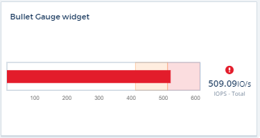
단일 값 위젯에 대한 조건부 색 서식
이제 설정한 임계값에 따라 배경색이 지정된 단일 값 위젯을 표시할 수 있습니다.

온보딩 중 사용자 초대
온보딩 프로세스 중 언제든지 관리자 > 사용자 관리 > + 사용자 를 클릭하여 Cloud Insights 환경에 추가 사용자를 초대할 수 있습니다. Onboarding이 완료되고 데이터가 수집되면 _Guest_or_User_roles를 사용하는 사용자는 더 큰 이점을 누릴 수 있습니다.
Data Collector 상세 페이지 개선
데이터 수집기 세부 정보 페이지가 읽기 쉬운 형식으로 오류를 표시하도록 개선되었습니다. 이제 오류가 페이지의 개별 테이블에 표시되고, 데이터 수집기에 여러 오류가 발생할 경우 각 오류가 별도의 줄에 표시됩니다.
2019년 8월
올과 사용 가능한 데이터 수집기
데이터 수집기를 환경에 추가할 때 구독 수준 또는 모든 데이터 수집기에 따라 사용 가능한 데이터 수집기만 표시하도록 필터를 설정할 수 있습니다.
ActiveIQ 통합
Cloud Insights는 NetApp ActiveIQ에서 데이터를 수집하여 NetApp 고객과 고객의 하드웨어/소프트웨어 시스템에 일련의 시각화, 분석 및 기타 지원 관련 서비스를 제공합니다. Cloud Insights는 ONTAP 데이터 관리 시스템과 통합됩니다. 을 참조하십시오 "Active IQ" 를 참조하십시오.
2019년 7월
대시보드 개선 사항
대시보드와 위젯이 다음과 같은 변경 사항으로 개선되었습니다.
-
Sum, Min, Max, Avg 외에도 * Count * 는 단일 값 위젯에서 롤업하는 옵션입니다. "Count"로 롤업할 때 Cloud Insights는 개체가 활성 상태인지 여부를 확인하고 활성 개체만 카운트에 추가합니다. 결과 숫자는 집계 및 필터의 영향을 받습니다.
-
단일 값 위젯에서 결과 숫자를 0, 1, 2, 3 또는 4개의 소수 자릿수로 표시하도록 선택할 수 있습니다.
-
꺾은선형 차트는 단일 카운터를 플롯할 때 축 레이블과 단위를 표시합니다.
-
모든 메트릭에 대한 모든 시계열 위젯에서 서비스 통합 데이터에 * Transform * 옵션을 사용할 수 있습니다. 시간 시리즈 위젯(라인, 스플라인, 영역, 스택 영역)의 모든 서비스 통합(Telegraf) 카운터 또는 메트릭의 경우 원하는 방법을 선택할 수 있습니다 "값을 변환합니다". 없음(표시 값 - 현재 상태), 합계, 델타, 누적 등
기본 버전으로 다운그레이드
지난 7일 동안 설문을 성공적으로 완료한 사용 가능한 NetApp 장치가 구성되지 않은 경우 Basic Edition으로 다운그레이드할 수 없으며 오류 메시지가 표시됩니다.
Kubbe-State-Metrics 수집 중
를 클릭합니다 "Kubernetes Data Collector를 참조하십시오" 이제 kubbe-state-metrics 플러그인에서 객체와 카운터를 수집하여 Cloud Insights에서 모니터링할 수 있는 메트릭의 수와 범위를 크게 확장할 수 있습니다.
2019년 6월
Cloud Insights 에디션
Cloud Insights는 고객의 예산과 비즈니스 요구에 맞게 다양한 버전으로 제공됩니다. NetApp Support 계정이 유효한 기존 NetApp 고객은 무료 * Basic Edition * 을 통해 7일 동안 데이터를 보존하고 NetApp 데이터 수집기에 액세스할 수 있습니다. 또는 * Standard Edition * 을 통해 지원되는 모든 데이터 수집기에 대한 액세스, 전문가 기술 지원 등을 이용할 수 있습니다. 사용 가능한 기능에 대한 자세한 내용은 NetApp을 참조하십시오 "Cloud Insights" 사이트.
새로운 인프라 데이터 수집기: NetApp HCI
-
"NetApp HCI 가상 센터" 인프라 데이터 수집기로 추가되었습니다. HCI 가상 센터 데이터 수집기는 NetApp HCI 호스트 정보를 수집하며 가상 센터 내의 모든 개체에 대해 읽기 전용 권한이 필요합니다.
HCI 데이터 수집기는 HCI 가상 센터에서만 가져옵니다. 스토리지 시스템에서 데이터를 수집하려면 NetApp도 구성해야 합니다 "SolidFire" 데이터 수집기.
2019년 5월
새로운 서비스 데이터 수집기: Kapacitor
-
"Kapacitor" 은(는) 서비스를 위한 데이터 수집기로 추가되었습니다.
Telegraf를 통한 서비스 통합
Cloud Insights는 이제 스위치 및 스토리지와 같은 인프라 장치에서 데이터를 수집하는 것은 물론, 를 사용하여 다양한 운영 체제 및 서비스에서 데이터를 수집합니다 "텔레프도 요원으로 등장했다" 통합 데이터 수집용. Telegraf는 메트릭을 수집 및 보고하는 데 사용할 수 있는 플러그인 기반 에이전트입니다. 입력 플러그인은 시스템/OS에 직접 액세스하거나 타사 API를 호출하거나 구성된 스트림을 수신함으로써 에이전트로 원하는 정보를 수집하는 데 사용됩니다.
현재 지원되는 통합에 대한 설명서는 * 참조 및 지원 * 의 왼쪽 메뉴에서 찾을 수 있습니다.
스토리지 가상 시스템 자산
-
Cloud Insights에서 SVM(스토리지 가상 머신)을 자산으로 사용할 수 있습니다. SVM에는 자체 자산 랜딩 페이지가 있으며 검색, 쿼리 및 필터에 표시 및 사용할 수 있습니다. SVM은 대시보드 위젯과 주석에도 사용할 수 있습니다.
획득 장치 시스템 요구 사항 감소
-
획득 장치(AU) 소프트웨어의 시스템 CPU 및 메모리 요구 사항이 감소했습니다. 새로운 요구 사항은 다음과 같습니다.
* 구성 요소 * |
* 이전 요건 * |
* 새로운 요구사항 * |
CPU 코어 |
4 |
2 |
메모리 |
16GB |
8GB |
추가 플랫폼 지원
-
현재 추가된 플랫폼은 다음과 같습니다 "Cloud Insights에 대해 지원됩니다":
리눅스 |
Windows |
CentOS 7.3 64비트 CentOS 7.4 64비트 CentOS 7.6 64비트 Debian 9 64비트 Red Hat Enterprise Linux 7.3 64비트 Red Hat Enterprise Linux 7.4 64비트 Red Hat Enterprise Linux 7.6 64비트 Ubuntu Server 18.04 LTS |
Microsoft Windows 10 64비트 Microsoft Windows Server 2008 R2 Microsoft Windows Server 2019 |
2019년 4월
태그별로 가상 머신을 필터링합니다
다음 데이터 수집기를 구성할 때 태그 또는 레이블에 따라 데이터 모음에서 가상 컴퓨터를 포함하거나 제외하도록 필터링할 수 있습니다.
2019년 3월
2019년 2월
AWS 하위 계정에서 수집 중
-
Cloud Insights 지원 "AWS 하위 계정에서 컬렉션" 단일 데이터 수집기 내에서 Cloud Insights가 하위 계정에서 수집하도록 AWS 환경을 구성해야 합니다.
데이터 수집기 이름 지정
-
이제 Data Collector 이름에는 문자, 숫자 및 밑줄 외에도 마침표(.), 하이픈(-) 및 공백()이 포함될 수 있습니다. 이름은 공백, 마침표 또는 하이픈으로 시작하거나 끝날 수 없습니다.
Windows용 획득 장치
-
Windows 서버/VM에서 Cloud Insights 획득 장치를 구성할 수 있습니다. 창을 검토합니다 "필수 구성 요소" 를 설치하기 전에 "획득 장치 소프트웨어".
2019년 1월
"소유자" 필드를 보다 쉽게 읽을 수 있습니다
-
대시보드 및 쿼리 목록에서 "소유자" 필드의 데이터는 이전에 사용자에게 친숙한 소유자 이름 대신 인증 ID 문자열이었습니다. 이제 "소유자" 필드에 보다 간단하고 읽기 쉬운 소유자 이름이 표시됩니다.
구독 페이지의 관리 단위 구분
-
Admin > Subscription * 페이지에 나열된 각 데이터 수집기에 대해 호스트 및 스토리지에 대한 관리 단위(MU) 수와 총계를 볼 수 있습니다.
2018년 12월
UI 로드 시간 개선
-
Cloud Insights UI(사용자 인터페이스)의 초기 로딩 시간이 크게 개선되었습니다. UI의 새로 고침 시간은 메타데이터가 로드된 경우에도 이와 같은 개선 효과를 얻을 수 있습니다.
데이터 수집기 대량 편집
-
여러 데이터 수집기에 대한 정보를 동시에 편집할 수 있습니다. 관측성 > 수집기 * 페이지에서 각 항목의 왼쪽 확인란을 선택하고 * Bulk Actions * 버튼을 클릭하여 수정할 데이터 수집기를 선택합니다. 편집 * 을 선택하고 필요한 필드를 수정합니다.
선택한 데이터 수집기는 동일한 공급업체 및 모델이어야 하며 동일한 획득 장치에 있어야 합니다.
지원 및 가입 페이지는 온보딩 중에 제공됩니다
-
온보딩 워크플로우 중에 * 도움말 > 지원 * 및 * 관리 > 구독 * 페이지로 이동할 수 있습니다. 이 페이지에서 다시 돌아오면 브라우저 탭을 닫지 않은 경우 온보딩 워크플로우로 돌아갑니다.
2018년 11월
NetApp 영업 또는 AWS 마켓플레이스를 통해 구독하십시오
-
Cloud Insights 구독 및 청구 기능은 이제 NetApp을 통해 직접 이용할 수 있습니다. 이 외에도 AWS Marketplace를 통해 셀프 서비스 방식으로 구독할 수 있습니다. Admin > Subscription * 페이지에 새로운 * Contact Sales * 링크가 표시됩니다. 환경 하나 또는 하나 이상의 Managed Unit(MU)이 있을 것으로 예상되는 고객의 경우 연락처 영업 링크를 통해 NetApp 세일즈 팀에 문의하는 것이 좋습니다.
텍스트 주석 하이퍼링크
-
이제 텍스트 유형 주석에 하이퍼링크를 포함할 수 있습니다.
온보딩 연습
-
이제 Cloud Insights는 새 환경에 로그인하기 위한 첫 번째 사용자(관리자 또는 계정 소유자)의 온보딩 연습을 제공합니다. 이 연습에서는 획득 장치 설치, 초기 데이터 수집기 구성 및 하나 이상의 유용한 대시보드를 선택하는 과정을 안내합니다.
갤러리에서 대시보드를 가져옵니다
-
온보딩 중에 대시보드를 선택하는 것 외에도 * 대시보드 > 모든 대시보드 표시 * 를 통해 대시보드를 가져오고 * + 갤러리 * 에서 * 를 클릭할 수 있습니다.
대시보드 복제
-
대시보드 목록 페이지에 대시보드를 복제하는 기능이 각 대시보드의 옵션 메뉴와 _Save_menu 에서 대시보드의 기본 페이지 자체에 선택 항목으로 추가되었습니다.
Cloud Central 제품 메뉴
-
다른 NetApp Cloud Central 제품으로 전환할 수 있는 메뉴가 화면 오른쪽 상단 모서리로 이동했습니다.